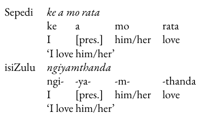
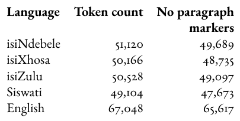
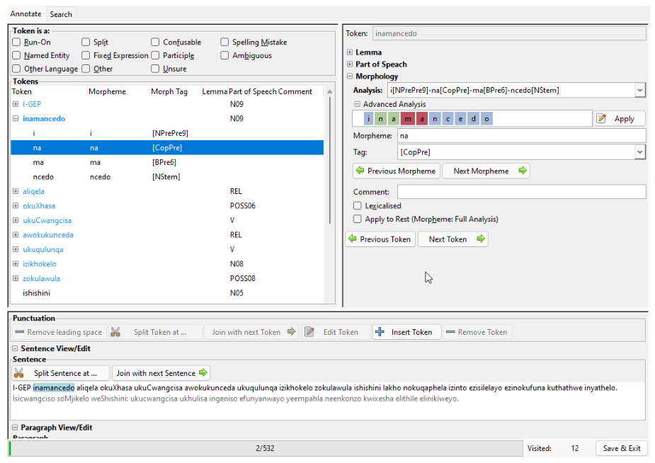
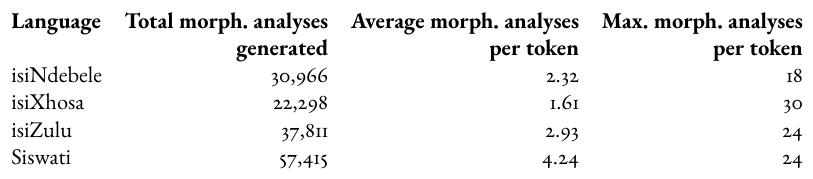
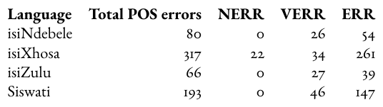
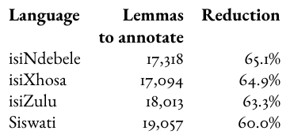
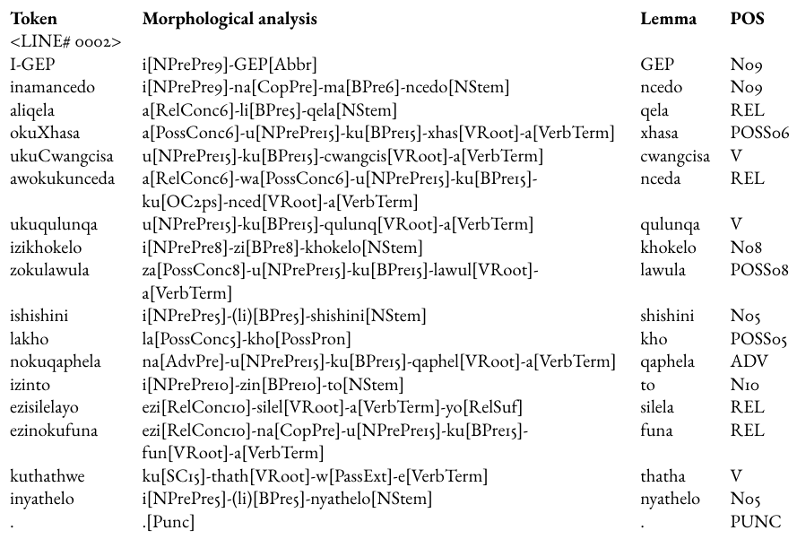

RAIL 2021Original text
Development of linguistically annotated parallel language resources for four South African languages
This is the original text of the paper. Translations are linked above.
Proceedings of the 2nd Workshop on Resources for African Indigenous Languages (RAIL 2021), Journal of the Digital Humanities Association of Southern Africa.
Original text, shown under its licence (CC BY-SA 4.0). Reuse allowed with attribution; share adaptations alike. The translations on this site are by Ernst van Gassen (Arktos AI Lab).
Plain text for reuse, with its licence: English · LICENSE
Affiliations
Tanja Gaustad
Martin J. Puttkammer
Centre for Text Technology (CTexT®)
North-West University, South Africa
E-mail addresses removed for privacy. They are in the original PDF.
Abstract
For this project, we collected and annotated data to develop language resources for the four official South African Nguni languages written with a conjunctive orthography. The data for these four languages is parallel to allow for comparative (computational) linguistic studies. The corpora have been annotated for three types of linguistic information (morphology, part-of-speech and lemma). The article focuses on the annotation procedure, design choices that were made along the way as well as the quality control steps used. Hopefully this description will give some guidance for similar projects on under-resourced languages in the future.
Keywords
Resource development, Nguni languages, linguistically annotated corpora, parallel corpora, annotation procedure
1 Introduction
The aim of the project described here was twofold: firstly to build annotated corpora for four South African languages and secondly to develop core technologies based on the annotated data, namely stand-alone morphological analysers, part-of-speech taggers and lemmatisers. We will only focus on the corpus development in this paper. For details on the development and evaluation of the core technologies, see (du Toit & Puttkammer 2021).
We will first briefly describe the linguistic background in section 2 followed by an overview of the necessary components for the successful development of the proposed resources (section 3). Each of these components will then be presented in more detail: the data (section 4), the linguistic annotation prerequisites (section 5) as well as the annotation process itself (section 6). Section 7 presents an example of the final data. Conclusions and future work are discussed in section 8.
2 Background
South Africa has eleven official languages comprising nine Bantu languages and two Germanic languages (English and Afrikaans). The South African Bantu languages can generally be categorised into three language family groups: Four conjunctively written Nguni languages (isiNdebele, isiXhosa, isiZulu, and Siswati); five disjunctively written languages including four Sotho languages (Sepedi, Sesotho, Setswana, and Tshivenḓa) and one Tswa-Ronga language (Xitsonga). At least nine of these eleven languages are considered resource-scarce.
Bantu languages have a few interesting linguistic characteristics that make it complex to deal with computationally: They are tone languages, have an elaborate system of noun classification (up to 21 classes), and the verbal morphology is complex and highly agglutinative. Especially the agglutinative nature of Bantu languages accounts for their complexity (Doke 1950): Words are formed by combining morphemes (distinct meaning bearing units), usually a root (for verbs) or a stem (for other word classes), with one or more affixes. These affixes are bound morphemes with a singular function within the word. Especially verbs are very productive through i.e. derivational morphology, resulting in a large vocabulary.
Another factor to note is the writing system used for the different Bantu languages. A distinction is made between linguistic words and orthographic words as these two entities do not always coincide. For disjunctively written Bantu languages, several orthographic words can correspond to one linguistic word (Louwrens & Poulos 2006), whereas for conjunctively written Bantu languages (which we are working with here) generally one orthographic word corresponds to one or more linguistic words.
See the following example taken from (Prinsloo & de Schryver 2002) for an illustration of disjunctive (Sepedi) versus conjunctive writing (isiZulu):

In this article, we will be discussing work done on the four conjunctively written Nguni languages, namely isiNdebele, isiXhosa, isiZulu and Siswati.
3 Components for building annotated language resources
Building linguistically annotated language resources requires a fair bit of preparation, especially if they should be usable for computational linguistic tasks or machine learning (Pustejovsky & Stubbs 2012). We identified the following components necessary to successfully compile linguistically annotated language resources:
- Data: without data no resources;
- Prerequisites for linguistic annotation: tag sets and protocols, linguistic experts, annotation tool(s);
- Annotation process: description of processing steps, incl. quality control.
Each component will now be described in more detail including the design choices we needed to make.
Table 1: Tokens per language

4 Data
The dataset used for this project has been put together using randomly selected documents from the South African government domain websites (*.gov.za) and includes text on different topics, such as speeches, press releases, health information as well as other information about government departments and services. The usual mode of operation in translation departments is to translate from an English source document to one of the other languages. We therefore collected documents and websites that were available in English as well as the four Nguni languages, resulting in a parallel dataset with English as the source language. The reason for using government material was the relatively easy availability of data in general and parallel data in particular. The parallel nature of the data allows for comparative (computational) linguistic studies of these four Nguni languages.
We aimed for about 50,000 tokens for each language. This choice was based on experience with previous projects on the development of computational linguistics tools. Especially for conjunctively written languages with a large vocabulary enough data to train and test such tools is essential. At the same time, the project also needed to adhere to time and budget constraints.
After the final selection and clean-up, the data was separated into sentences and tokenised. Each paragraph is kept as a unit to be shown as context during annotation. The final token counts can be found in Table 1, with and without the 1,431 paragraph markers. For more detail on the data set, see (Gaustad & Puttkammer 2021).
5 Prerequisites for linguistic annotation
Next to the collection of data, another goal of the project was to annotate each language corpus for three different types of linguistic information: morphology, part-of-speech (POS) and lemmas.
Data annotated for morphology allows researchers to investigate morphological phenomena in real language corpora. The study of word creation processes can lead to a better understanding of these processes or even to new linguistic insights.
Assigning categories to words according to their syntactic function in a sentence is called POS tagging. It is often used as a first step in syntactic analysis and can also be successfully leveraged for e.g. authorship analysis or writing style detection.
The third type of linguistic annotation, lemmatisation, is generally seen as an indispensable source of linguistic information for spelling checkers, dictionaries, information retrieval systems, etc.
5.1 Tag sets and protocols
Before starting the actual annotation of the data, we needed to develop protocols and tag sets for each type of annotation. The protocols explain how to annotate the data and what existing international standards apply (EAGLES 1996). The tag sets contain a list of permissible tags along with a description and examples for each tag. The current tag sets are refined versions of the ones developed for the National Centre for Human Language Technology (NCHLT) project described in (Eiselen & Puttkammer 2014).
For the morphological annotation layer the aim was to provide full morphological annotations labeling each morpheme. To achieve this, a total of 380 linguistically permissible morphology tags were defined, i.e. [VRoot] was used to indicate the verbal root or [SC15] for a subject concord of class 15. These were combined during annotation to yield full morphological analyses of the tokens present in the data. For example the isiXhosa word izinto ('things') was analysed as i[NPrePre10]- zin[BPre10]-to[NStem].
The POS tag set consists of 20 main word classes for all four languages, e.g. ADJ for adjectives or CONJ for conjunctions. Some tags include additional information on class numbers, e.g. N09 (noun class 9) or POSS06 (possessive class 6) resulting in a total of 107 unique POS tags available during annotation.
For lemmatisation, the aim was to identify the stem lemma for each token (Prinsloo 2009). The noun izinto in isiXhosa will be annotated with the stem lemma to. This stem lemma in combination with the POS tag N10 (noun class 10) encodes the essential syntactic information for the word izinto.
5.2 Linguistic experts
Once the tag sets and protocols had been established, our corpora needed to be marked up with the relevant linguistic information. We considered the following two possibilities on how to accomplish the annotation of the data: linguistic experts or students could be recruited and trained or crowdsourcing could be used (Zaidan 2012).
Especially for the morphological annotation, in-depth linguistic knowledge is needed to correctly annotate the languages covered in this project. For crowdsourcing, we did not expect the general public to have enough background knowledge nor to find enough people speaking the four Nguni languages. Using (linguistics) students would have been a possibility, but again the background knowledge was a reason for concern as well as the volume of data to annotate in the given time-frame. That was the main reason we decided to have linguistic experts perform the annotation of the corpora.
5.3 Tools
The linguistic experts worked in the Lara II annotation tool[1] for all three levels of linguistic annotation. Lara II, developed by the Centre for Text Technology (CTexT®), is domain-specific software for the annotation of tokens, lemmas, POS tags, and morphology. The aim of this tool is to enable users who have limited or basic computer skills to develop annotated, machine-readable corpora. The tool has shown to increase annotation accuracy while at the same time decreasing annotation time (Puttkammer 2014).

Figure 1: Annotation screenshot from Lara II
The interface contains the token to be annotated (highlighted), the context, an annotation field as well as a comments field. Lara II is easily adaptable to different annotation tasks via a configuration file. In our case this was ideal as each level of linguistic annotation had different requirements, from the allowed tags and the way in which the information is presented to the actions possible. See figure 1 for an example screenshot.
6 Annotation process
An essential part of every annotation project, especially when involving several layers of annotation that build on each other, is mapping out the process to follow. In our case, the following annotation steps were applied:
- Morphology
- (a) Pre-annotate data for morphology
- (b) Linguistic experts correct pre-annotated morphology
- (c) Quality control for morphology
- POS
- (a) Pre-annotate data for POS
- (b) Linguistic experts correct pre-annotated POS and if needed morphology
- (c) Quality control for POS
- Lemmas
- (a) Pre-annotate data for lemmas
- (b) Linguistic experts correct pre-annotated lemmas
- (c) Quality control for lemmas
- Quality control for all annotations
For both the morphological annotation and the POS annotation, the data was presented sequentially in Lara II. During POS annotation, the linguistic experts were also given the possibility to correct the morphological analysis if needed.
For the lemmatisation task, the linguistic experts were given an alphabetical list where each unique lemma-morphological analysis combination was presented separately together with one sample context paragraph.
6.1 Pre-annotation
As described in the annotation processing steps above, the data was automatically pre-annotated for each annotation task. Pre-annotation has been shown to speed up annotation (Lingren et al. 2014) as well as improve overall quality of the annotation (Rehbein et al. 2012). With morphologically complex languages such as the ones we are working with here, it is imperative to support the manual annotation process as much as possible (Puttkammer 2014).
Pre-annotation for morphology consisted in applying the NCHLT morphological decomposers (Eiselen & Puttkammer 2014) available for our four languages to generate all possible morphological analyses of the identified tokens. The linguistic experts could then choose the most accurate suggested analysis and make changes rather than annotate each token from scratch.
The statistics for the number of morphological analyses generated along with the average and maximum number of morphological analyses per token can be found in table 2. These numbers illustrate well the morphological complexity of the Bantu languages annotated in this project. Usually verbs will have the most generated possible analyses and closed class words like conjunctions will have only one analysis. Overall, the average number of morphological analyses is rather high.
For POS pre-annotation, a rule-based script produced a detailed POS tag per token using the morphological annotation as input. When possible errors in the morphological analysis were found, the token was either tagged as NERR (noun error), VERR (verb error), or ERR (general error). In these cases, the linguistic experts were asked to first correct the faulty morphological analysis and then add the correct POS tag.
Table 3 gives an overview of the generated POS error tags in our data. The statistics show that there were few morphological analyses that triggered error tags. This, however, does not imply that the rest of the generated POS tags were correct.
For lemmatisation, we also used a rule-based script taking the morphological annotation as input, in combination with lookup tables for closed class tokens such as conjunctions, to produce the most likely stem lemma per token. As noted above, for the annotation of lemmas only unique combinations of a lemma and a morphological analysis were presented to the linguistic experts in alphabetical format. Table 4 contains the number of lemmas that had to be checked per language. It also shows the reduction of tokens to annotate that was achieved by applying this strategy.
6.2 Quality control
Rigorous quality control (QC) has been carried out at various stages of the project. During the annotation of a type of linguistic information, QC was carried out to provide feedback to the linguistic experts, gather annotation as well as linguistic questions and resolve these issues in a structured, shared and documented way, for one language and also across languages. This process improved the quality of each type of linguistic annotation and made sure all linguistic experts applied the same rules and standards.
Table 2: Statistics on morphological pre-annotation

Table 3: Statistics on POS pre-annotation

Table 4: Statistics on lemma pre-annotation

After every type of annotation was finished, we checked the adherence to the protocols as well as differing annotations for the same/similar tokens. As explained in the overview of section 6, each annotation feeds into the next. To make sure as few mistakes as possible were used as input for the pre-annotation of the next step, QC after completion of each annotation level was crucial.
Once annotation on the data was finished for all linguistic levels, QC was done to ensure that there is a 99% agreement between the morphology, POS and lemma annotations. To be able to quantify the results, a rule-based generator extracted the POS and lemma automatically from the morphological analysis. This generated POS and lemma were then compared to the annotations in our manually verified data. All differences between the two were checked and corrected by the linguistic experts. This process was repeated until the evaluation criteria were met.
Unfortunately, we could not use inter-annotator agreement to measure the accuracy of the annotations (Artstein & Poesio 2008) because only one linguistic expert for each language included in this project was available. We did, however, apply the above described three way comparison in an effort to produce the best quality data with the given human resources.
7 Final data set
After finalizing the annotation and QC steps, the new resources for four Nguni languages were completed. The data can be accessed via the South African Centre for Digital Language Resources (SADiLaR) repository[2] and is distributed under the Creative Commons Attribution 4.0 International licence[3].
Table 5 contains an example of the final data for isiXhosa. The data is in a four-column text format with each column corresponding to a certain type of information: token, morphological analysis, lemma or POS. Each line contains a token-annotation combination. Line markers with a counter show the start of each original paragraph and can be used to align the content of the files.
Table 5: Example of final annotated resource for isiXhosa

8 Conclusions and future work
In the future, it would be interesting to collect data from more diverse sources and not just government text. Linguistically, a wider spread of genres will represent more types of real language use. Also, the core technologies developed on the basis of this data would be more generic.
We also learned that it is important to have quick feedback loops between the corrections done on an annotation layer and the QC carried out on the data. This helps to reach a good quality-level early in the annotation phase and minimizes the need for re-annotation and/or further correction of already annotated data.
One thing to point out is that it is very hard to find linguistic experts for South African languages who are available and qualified to do annotations for a project like ours. In the future, we might need to train new linguistic experts which will definitely inf uence the time-line as well as overall budgets of annotation projects. A conclusion to draw from this is that South African Bantu languages are not only under-resourced with regards to data, but that the development of human capital is also an important aspect of the development of resources for these languages.
Hopefully these parallel linguistically annotated corpora will prove interesting for researchers from different backgrounds and will help to gain more insight into the workings of these four Nguni languages, be it morphological processes, lemmatisation questions or syntactic structures.
Notes
- [1] https://repo.sadilar.org/handle/20.500.12185/432
- [2] https://repo.sadilar.org/handle/20.500.12185/546
- [3] http://creativecommons.org/licenses/by/4.0/
Acknowledgements
This research was made possible with the support from the South African Centre for Digital Language Resources (SADiLaR). SADiLaR is a research infrastructure established by the Department of Science and Innovation (DSI) of the South African government as part of the South African Research Infrastructure Roadmap (SARIR).
References
Artstein, R. & Poesio, M. (2008), 'Survey article: Inter-coder agreement for computational linguistics', Computational Linguistics 34(4), 555-596.
Doke, C. (1950), 'Bantu languages, inflexional with a tendency towards agglutination', African Studies 9(1), 1-19.
du Toit, J. S. & Puttkammer, M. J. (2021), 'Developing core technologies for resource-scarce Nguni languages', Manuscript under review for publication.
EAGLES (1996), Expert advisory group on languages engineering standards: recommendations for the morphosyntactic annotation of corpora, Technical report, EAGLES, Document EAGTCWG-MAC/R.
Eiselen, R. & Puttkammer, M. J. (2014), Developing text resources for ten South African languages, in 'Proceedings of the Ninth International Conference on Language Resources and Evaluation (LREC 2014)'.
Gaustad, T. & Puttkammer, M. J. (2021), 'Linguistically annotated dataset for four official South African languages with a conjunctive orthography: isiNdebele, isiXhosa, isiZulu, and Siswati', Manuscript under review for publication.
Lingren, T., Deleger, L., Molnar, K., Zhai, H., Meinzen-Derr, J., Kaiser, M., Stoutenborough, L., Li, Q. & Solti, I. (2014), 'Evaluating the impact of pre-annotation on annotation speed and potential bias: natural language processing gold standard development for clinical named entity recognition in clinical trial announcements', Journal of the American Medical Informatics Association 21:3,406-413.
Louwrens, L. J. & Poulos, G. (2006), 'The status of the word in selected conventional writing systems - the case of disjunctive writing', Southern African Linguistics and Applied Language Studies 24(3), 389-401.
Prinsloo, D. (2009), 'Current lexicography practice in Bantu with specific reference to the Oxford Northern Sotho school dictionary', International Journal of Lexicography 22(2), 151-178.
Prinsloo, D. J. & de Schryver, G.-M. (2002), 'Towards an 11x11 array for the degree of conjunctivism / disjunctivism of the South African languages', Nordic Journal of African Studies 11(2), 249-265.
Pustejovsky, J. & Stubbs, A. (2012), Natural Language Annotation for Machine Learning, O'Reilly Media, Inc.
Puttkammer, M. J. (2014), Efficient development of human language technology resources for resource-scarce languages, PhD thesis, North-West University.
Rehbein, I., Ruppenhofer, J. & Sporleder, C. (2012), 'Is it worth the effort? assessing the benefits of partial automatic pre-labeling for frame-semantic annotation', Language Resources and Evaluation 46:1, 1-23.
Zaidan, O. F. (2012), Crowdsourcing annotation for Machine Learning in Natural Language Processing tasks, PhD thesis, Johns Hopkins University.
Development of linguistically annotated parallel language resources for four South African languages
Développement de ressources linguistiques parallèles annotées linguistiquement pour quatre langues sud-africaines
Affiliations
Tanja Gaustad
Martin J. Puttkammer
Centre for Text Technology (CTexT®)
North-West University, South Africa
Affiliations
Tanja Gaustad
Martin J. Puttkammer
Centre for Text Technology (CTexT®)
North-West University, South Africa
Abstract
Résumé
For this project, we collected and annotated data to develop language resources for the four official South African Nguni languages written with a conjunctive orthography. The data for these four languages is parallel to allow for comparative (computational) linguistic studies. The corpora have been annotated for three types of linguistic information (morphology, part-of-speech and lemma). The article focuses on the annotation procedure, design choices that were made along the way as well as the quality control steps used. Hopefully this description will give some guidance for similar projects on under-resourced languages in the future.
Pour ce projet, nous avons collecté et annoté des données pour développer des ressources linguistiques pour les quatre langues Nguni officielles d'Afrique du Sud écrites avec une orthographe conjonctive. Les données pour ces quatre langues sont parallèles pour permettre des études linguistiques comparatives (computationnelles). Les corpus ont été annotés pour trois types d'informations linguistiques (morphologie, catégorie grammaticale et lemme). L'article se concentre sur la procédure d'annotation, les choix de conception qui ont été faits en cours de route ainsi que les étapes de contrôle de qualité utilisées. Espérons que cette description donnera quelques orientations pour des projets similaires sur des langues sous-dotées à l'avenir.
Keywords
Mots-clés
Resource development, Nguni languages, linguistically annotated corpora, parallel corpora, annotation procedure
Développement de ressources, langues Nguni, corpus linguistiquement annotés, corpus parallèles, procédure d'annotation
1 Introduction
1 Introduction
The aim of the project described here was twofold: firstly to build annotated corpora for four South African languages and secondly to develop core technologies based on the annotated data, namely stand-alone morphological analysers, part-of-speech taggers and lemmatisers. We will only focus on the corpus development in this paper. For details on the development and evaluation of the core technologies, see (du Toit & Puttkammer 2021).
L'objectif du projet décrit ici était double : premièrement, construire des corpus annotés pour quatre langues sud-africaines et, deuxièmement, développer des technologies de base fondées sur les données annotées, à savoir des analyseurs morphologiques autonomes, des étiqueteurs de catégories grammaticales et des lemmatiseurs. Nous nous concentrerons uniquement sur le développement du corpus dans cet article. Pour plus de détails sur le développement et l'évaluation des technologies de base, voir (du Toit & Puttkammer 2021).
We will first briefly describe the linguistic background in section 2 followed by an overview of the necessary components for the successful development of the proposed resources (section 3). Each of these components will then be presented in more detail: the data (section 4), the linguistic annotation prerequisites (section 5) as well as the annotation process itself (section 6). Section 7 presents an example of the final data. Conclusions and future work are discussed in section 8.
Nous allons d'abord brièvement décrire le contexte linguistique dans la section 2, suivi d'un aperçu des composants nécessaires au développement réussi des ressources proposées (section 3). Chacune de ces composantes sera ensuite présentée plus en détail : les données (section 4), les prérequis d’annotation linguistique (section 5) ainsi que le processus d’annotation lui-même (section 6). La section 7 présente un exemple des données finales. Les conclusions et les travaux futurs sont discutés dans la section 8.
2 Background
2 Contexte
South Africa has eleven official languages comprising nine Bantu languages and two Germanic languages (English and Afrikaans). The South African Bantu languages can generally be categorised into three language family groups: Four conjunctively written Nguni languages (isiNdebele, isiXhosa, isiZulu, and Siswati); five disjunctively written languages including four Sotho languages (Sepedi, Sesotho, Setswana, and Tshivenḓa) and one Tswa-Ronga language (Xitsonga). At least nine of these eleven languages are considered resource-scarce.
L'Afrique du Sud compte onze langues officielles comprenant neuf langues bantoues et deux langues germaniques (l'anglais et l'afrikaans). Les langues bantoues d'Afrique du Sud peuvent généralement être catégorisées en trois groupes de familles de langues : quatre langues nguni écrites de manière conjointe (isiNdebele, isiXhosa, isiZulu et Siswati) ; cinq langues écrites de manière disjointe, dont quatre langues sotho (Sepedi, Sesotho, Setswana et Tshivenḓa) et une langue tswa-ronga (Xitsonga). Au moins neuf de ces onze langues sont considérées comme des langues peu dotées en ressources.
Bantu languages have a few interesting linguistic characteristics that make it complex to deal with computationally: They are tone languages, have an elaborate system of noun classification (up to 21 classes), and the verbal morphology is complex and highly agglutinative. Especially the agglutinative nature of Bantu languages accounts for their complexity (Doke 1950): Words are formed by combining morphemes (distinct meaning bearing units), usually a root (for verbs) or a stem (for other word classes), with one or more affixes. These affixes are bound morphemes with a singular function within the word. Especially verbs are very productive through i.e. derivational morphology, resulting in a large vocabulary.
Les langues bantoues ont quelques caractéristiques linguistiques intéressantes qui les rendent complexes à traiter de manière computationnelle: elles sont des langues tonales, ont un système élaboré de classification des noms (jusqu'à 21 classes), et la morphologie verbale est complexe et très agglutinante. C'est surtout la nature agglutinante des langues bantoues qui explique leur complexité (Doke 1950) : les mots sont formés en combinant des morphèmes (des unités distinctes porteuses de sens), généralement une racine (pour les verbes) ou un radical (pour les autres classes de mots), avec un ou plusieurs affixes. Ces affixes sont des morphèmes liés avec une fonction singulière dans le mot. Les verbes sont particulièrement productifs grâce à la morphologie dérivationnelle, ce qui entraîne un vocabulaire étendu.
Another factor to note is the writing system used for the different Bantu languages. A distinction is made between linguistic words and orthographic words as these two entities do not always coincide. For disjunctively written Bantu languages, several orthographic words can correspond to one linguistic word (Louwrens & Poulos 2006), whereas for conjunctively written Bantu languages (which we are working with here) generally one orthographic word corresponds to one or more linguistic words.
Un autre facteur à noter est le système d'écriture utilisé pour les différentes langues bantoues. Une distinction est faite entre les mots linguistiques et les mots orthographiques, car ces deux entités ne coïncident pas toujours. Pour les langues bantoues écrites de manière disjonctive, plusieurs mots orthographiques peuvent correspondre à un seul mot linguistique (Louwrens & Poulos 2006), tandis que pour les langues bantoues écrites de manière conjonctive (que nous étudions ici) généralement un mot orthographique correspond à un ou plusieurs mots linguistiques.
See the following example taken from (Prinsloo & de Schryver 2002) for an illustration of disjunctive (Sepedi) versus conjunctive writing (isiZulu):
Voici un exemple tiré de (Prinsloo & de Schryver 2002) pour une illustration de l'écriture disjonctive (Sepedi) versus conjonctive (isiZulu) :
In this article, we will be discussing work done on the four conjunctively written Nguni languages, namely isiNdebele, isiXhosa, isiZulu and Siswati.
Dans cet article, nous discuterons des travaux réalisés sur les quatre langues Nguni écrites de manière conjointe, à savoir l'isiNdebele, l'isiXhosa, l'isiZulu et le Siswati.
3 Components for building annotated language resources
3 Composants pour la construction de ressources linguistiques annotées
Building linguistically annotated language resources requires a fair bit of preparation, especially if they should be usable for computational linguistic tasks or machine learning (Pustejovsky & Stubbs 2012). We identified the following components necessary to successfully compile linguistically annotated language resources:
La construction de ressources linguistiques annotées nécessite une préparation assez importante, surtout si elles doivent être utilisables pour des tâches de linguistique informatique ou d'apprentissage automatique (Pustejovsky & Stubbs 2012). Nous avons identifié les composants suivants nécessaires pour compiler avec succès des ressources linguistiques annotées :
Data: without data no resources;
Données: sans données pas de ressources;
Prerequisites for linguistic annotation: tag sets and protocols, linguistic experts, annotation tool(s);
Prérequis pour l'annotation linguistique : ensembles d'étiquettes et protocoles, experts linguistiques, outil(s) d'annotation ;
Annotation process: description of processing steps, incl. quality control.
Processus d'annotation: description des étapes de traitement, incl. contrôle de qualité.
Each component will now be described in more detail including the design choices we needed to make.
Chaque composant sera maintenant décrit plus en détail, y compris les choix de conception que nous devions faire.
Table 1: Tokens per language
Tableau 1 : Tokens par langue
4 Data
4 Données
The dataset used for this project has been put together using randomly selected documents from the South African government domain websites (*.gov.za) and includes text on different topics, such as speeches, press releases, health information as well as other information about government departments and services. The usual mode of operation in translation departments is to translate from an English source document to one of the other languages. We therefore collected documents and websites that were available in English as well as the four Nguni languages, resulting in a parallel dataset with English as the source language. The reason for using government material was the relatively easy availability of data in general and parallel data in particular. The parallel nature of the data allows for comparative (computational) linguistic studies of these four Nguni languages.
L’ensemble de données utilisé pour ce projet a été constitué à partir de documents sélectionnés au hasard sur les sites Web du domaine gouvernemental sud-africain (*.gov.za) et comprend des textes sur différents sujets, tels que des discours, des communiqués de presse, des informations sur la santé ainsi que d’autres informations sur les ministères et les services gouvernementaux. Le mode de fonctionnement habituel dans les départements de traduction est de traduire à partir d'un document source anglais vers l'une des autres langues. Nous avons donc recueilli des documents et des sites Web qui étaient disponibles en anglais ainsi que les quatre langues Nguni, résultant en un ensemble de données parallèle avec l'anglais comme langue source. La raison de l'utilisation de matériel gouvernemental était la disponibilité relativement facile de données en général et de données parallèles en particulier. La nature parallèle des données permet des études linguistiques comparatives (computationnelles) de ces quatre langues Nguni.
We aimed for about 50,000 tokens for each language. This choice was based on experience with previous projects on the development of computational linguistics tools. Especially for conjunctively written languages with a large vocabulary enough data to train and test such tools is essential. At the same time, the project also needed to adhere to time and budget constraints.
Nous visions environ 50 000 tokens pour chaque langue. Ce choix s’est appuyé sur l’expérience acquise dans le cadre de projets antérieurs portant sur le développement d’outils de linguistique computationnelle. Surtout pour les langues écrites de manière conjointe avec un grand vocabulaire, suffisamment de données pour entraîner et tester de tels outils est essentiel. En même temps, le projet devait également respecter les contraintes de temps et de budget.
After the final selection and clean-up, the data was separated into sentences and tokenised. Each paragraph is kept as a unit to be shown as context during annotation. The final token counts can be found in Table 1, with and without the 1,431 paragraph markers. For more detail on the data set, see (Gaustad & Puttkammer 2021).
Après la sélection finale et le nettoyage, les données ont été séparées en phrases et tokenisées. Chaque paragraphe est conservé en tant qu'unité à afficher comme contexte pendant l'annotation. Le nombre final de jetons peut être trouvé dans le tableau 1, avec et sans les 1 431 marqueurs de paragraphe. Pour plus de détails sur l’ensemble de données, voir (Gaustad & Puttkammer 2021).
5 Prerequisites for linguistic annotation
5 Prérequis pour l'annotation linguistique
Next to the collection of data, another goal of the project was to annotate each language corpus for three different types of linguistic information: morphology, part-of-speech (POS) and lemmas.
À côté de la collecte de données, un autre objectif du projet était d'annoter chaque corpus linguistique pour trois types différents d'informations linguistiques : la morphologie, la catégorie grammaticale (POS) et les lemmes.
Data annotated for morphology allows researchers to investigate morphological phenomena in real language corpora. The study of word creation processes can lead to a better understanding of these processes or even to new linguistic insights.
Les données annotées pour la morphologie permettent aux chercheurs d'étudier les phénomènes morphologiques dans des corpus de langues réelles. L'étude des processus de création de mots peut conduire à une meilleure compréhension de ces processus ou même à de nouvelles perspectives linguistiques.
Assigning categories to words according to their syntactic function in a sentence is called POS tagging. It is often used as a first step in syntactic analysis and can also be successfully leveraged for e.g. authorship analysis or writing style detection.
L'attribution de catégories à des mots selon leur fonction syntaxique dans une phrase s'appelle l'étiquetage morpho-syntaxique (POS tagging). Il est souvent utilisé comme une première étape dans l'analyse syntaxique et peut également être utilisé avec succès pour, par exemple, l'analyse de la paternité ou la détection du style d'écriture.
The third type of linguistic annotation, lemmatisation, is generally seen as an indispensable source of linguistic information for spelling checkers, dictionaries, information retrieval systems, etc.
Le troisième type d'annotation linguistique, la lemmatisation, est généralement considéré comme une source indispensable d'informations linguistiques pour les correcteurs orthographiques, les dictionnaires, les systèmes de recherche d'informations, etc.
5.1 Tag sets and protocols
5.1 Ensembles d'étiquettes et protocoles
Before starting the actual annotation of the data, we needed to develop protocols and tag sets for each type of annotation. The protocols explain how to annotate the data and what existing international standards apply (EAGLES 1996). The tag sets contain a list of permissible tags along with a description and examples for each tag. The current tag sets are refined versions of the ones developed for the National Centre for Human Language Technology (NCHLT) project described in (Eiselen & Puttkammer 2014).
Avant de commencer l'annotation effective des données, nous devions développer des protocoles et des ensembles d'étiquettes pour chaque type d'annotation. Les protocoles expliquent comment annoter les données et quelles normes internationales existantes s'appliquent (EAGLES 1996). Les ensembles de balises contiennent une liste de balises autorisées ainsi qu'une description et des exemples pour chaque balise. Les ensembles d'étiquettes actuels sont des versions affinées de ceux développés pour le projet du National Centre for Human Language Technology (NCHLT) décrit dans (Eiselen & Puttkammer 2014).
For the morphological annotation layer the aim was to provide full morphological annotations labeling each morpheme. To achieve this, a total of 380 linguistically permissible morphology tags were defined, i.e. [VRoot] was used to indicate the verbal root or [SC15] for a subject concord of class 15. These were combined during annotation to yield full morphological analyses of the tokens present in the data. For example the isiXhosa word izinto ('things') was analysed as i[NPrePre10]- zin[BPre10]-to[NStem].
Pour la couche d'annotation morphologique, l'objectif était de fournir des annotations morphologiques complètes étiquetant chaque morphème. Pour ce faire, un total de 380 balises de morphologie linguistiquement permises ont été définies, c'est-à-dire que [VRoot] était utilisé pour indiquer la racine verbale ou [SC15] pour un accord du sujet de classe 15. Ceux-ci ont été combinés au cours de l'annotation pour donner des analyses morphologiques complètes des jetons présents dans les données. Par exemple, le mot isiXhosa izinto (« choses ») a été analysé comme i[NPrePre10]-zin[BPre10]-to[NStem].
The POS tag set consists of 20 main word classes for all four languages, e.g. ADJ for adjectives or CONJ for conjunctions. Some tags include additional information on class numbers, e.g. N09 (noun class 9) or POSS06 (possessive class 6) resulting in a total of 107 unique POS tags available during annotation.
L'ensemble d'étiquettes POS se compose de 20 classes de mots principales pour les quatre langues, par exemple ADJ pour les adjectifs ou CONJ pour les conjonctions. Certaines étiquettes incluent des informations supplémentaires sur les numéros de classe, par exemple N09 (classe nominale 9) ou POSS06 (classe possessive 6), ce qui donne un total de 107 étiquettes POS uniques disponibles lors de l'annotation.
For lemmatisation, the aim was to identify the stem lemma for each token (Prinsloo 2009). The noun izinto in isiXhosa will be annotated with the stem lemma to. This stem lemma in combination with the POS tag N10 (noun class 10) encodes the essential syntactic information for the word izinto.
Pour la lemmatisation, l'objectif était d'identifier le lemme du radical pour chaque token (Prinsloo 2009). Le nom izinto en isiXhosa sera annoté avec le lemme radical to. Ce lemme de radical en combinaison avec l'étiquette POS N10 (classe nominale 10) encode l'information syntaxique essentielle pour le mot izinto.
5.2 Linguistic experts
5.2 Experts linguistiques
Once the tag sets and protocols had been established, our corpora needed to be marked up with the relevant linguistic information. We considered the following two possibilities on how to accomplish the annotation of the data: linguistic experts or students could be recruited and trained or crowdsourcing could be used (Zaidan 2012).
Une fois les ensembles d'étiquettes et les protocoles établis, nos corpus devaient être annotés avec les informations linguistiques pertinentes. Nous avons examiné les deux possibilités suivantes sur la façon d'accomplir l'annotation des données: les experts linguistiques ou les étudiants pourraient être recrutés et formés ou le crowdsourcing pourrait être utilisé (Zaidan 2012).
Especially for the morphological annotation, in-depth linguistic knowledge is needed to correctly annotate the languages covered in this project. For crowdsourcing, we did not expect the general public to have enough background knowledge nor to find enough people speaking the four Nguni languages. Using (linguistics) students would have been a possibility, but again the background knowledge was a reason for concern as well as the volume of data to annotate in the given time-frame. That was the main reason we decided to have linguistic experts perform the annotation of the corpora.
Surtout pour l'annotation morphologique, des connaissances linguistiques approfondies sont nécessaires pour annoter correctement les langues couvertes dans ce projet. Pour le crowdsourcing, nous ne nous attendions pas à ce que le grand public ait suffisamment de connaissances de base ni à trouver suffisamment de personnes parlant les quatre langues Nguni. L'utilisation d'étudiants (en linguistique) aurait été une possibilité, mais encore une fois, les connaissances de base étaient une source de préoccupation ainsi que le volume de données à annoter dans le délai imparti. C'était la principale raison pour laquelle nous avons décidé de faire appel à des experts linguistiques pour l'annotation des corpus.
5.3 Tools
5.3 Outils
The linguistic experts worked in the Lara II annotation tool[1] for all three levels of linguistic annotation. Lara II, developed by the Centre for Text Technology (CTexT®), is domain-specific software for the annotation of tokens, lemmas, POS tags, and morphology. The aim of this tool is to enable users who have limited or basic computer skills to develop annotated, machine-readable corpora. The tool has shown to increase annotation accuracy while at the same time decreasing annotation time (Puttkammer 2014).
Les experts linguistiques ont travaillé dans l'outil d'annotation Lara II[1] pour les trois niveaux d'annotation linguistique. Lara II, développé par le Centre for Text Technology (CTexT®), est un logiciel spécifique au domaine pour l'annotation de tokens, de lemmes, d'étiquettes POS et de la morphologie. L'objectif de cet outil est de permettre aux utilisateurs ayant des compétences informatiques limitées ou de base de développer des corpus annotés, lisibles par machine. L'outil a montré qu'il augmentait la précision de l'annotation tout en diminuant le temps d'annotation (Puttkammer 2014).
Figure 1: Annotation screenshot from Lara II
Figure 1 : Capture d'écran de l'annotation de Lara II
The interface contains the token to be annotated (highlighted), the context, an annotation field as well as a comments field. Lara II is easily adaptable to different annotation tasks via a configuration file. In our case this was ideal as each level of linguistic annotation had different requirements, from the allowed tags and the way in which the information is presented to the actions possible. See figure 1 for an example screenshot.
L'interface contient le token à annoter (surligné), le contexte, un champ d'annotation ainsi qu'un champ de commentaires. Lara II s'adapte facilement aux différentes tâches d'annotation via un fichier de configuration. Dans notre cas, cela était idéal car chaque niveau d'annotation linguistique avait des exigences différentes, des balises autorisées à la manière dont l'information est présentée en passant par les actions possibles. Voir la figure 1 pour un exemple de capture d'écran.
6 Annotation process
6 Processus d'annotation
An essential part of every annotation project, especially when involving several layers of annotation that build on each other, is mapping out the process to follow. In our case, the following annotation steps were applied:
Une partie essentielle de chaque projet d'annotation, en particulier lorsqu'il implique plusieurs couches d'annotation qui s'appuient les unes sur les autres, est de cartographier le processus à suivre. Dans notre cas, les étapes d'annotation suivantes ont été appliquées:
Morphology
Morphologie
(a) Pre-annotate data for morphology
(a) Pré-annoter les données pour la morphologie
(b) Linguistic experts correct pre-annotated morphology
(b) Les experts linguistiques corrigent la morphologie pré-annotée
(c) Quality control for morphology
c) Contrôle de la qualité de la morphologie
POS
POS
(a) Pre-annotate data for POS
(a) Pré-annoter les données pour POS
(b) Linguistic experts correct pre-annotated POS and if needed morphology
(b) Des experts linguistiques corrigent les étiquettes POS pré-annotées et, si nécessaire, la morphologie
(c) Quality control for POS
(c) Contrôle de la qualité pour POS
Lemmas
Lemmes
(a) Pre-annotate data for lemmas
(a) Pré-annoter les données pour les lemmes
(b) Linguistic experts correct pre-annotated lemmas
(b) Des experts linguistiques corrigent les lemmes pré-annotés
(c) Quality control for lemmas
(c) Contrôle qualité pour les lemmes
Quality control for all annotations
Contrôle de qualité pour toutes les annotations
For both the morphological annotation and the POS annotation, the data was presented sequentially in Lara II. During POS annotation, the linguistic experts were also given the possibility to correct the morphological analysis if needed.
Pour l'annotation morphologique et l'annotation POS, les données ont été présentées séquentiellement dans Lara II. Au cours de l'annotation POS, les experts linguistiques ont également eu la possibilité de corriger l'analyse morphologique si nécessaire.
For the lemmatisation task, the linguistic experts were given an alphabetical list where each unique lemma-morphological analysis combination was presented separately together with one sample context paragraph.
Pour la tâche de lemmatisation, les experts linguistiques ont reçu une liste alphabétique dans laquelle chaque combinaison lemme-morphologique unique était présentée séparément avec un exemple de paragraphe contextuel.
6.1 Pre-annotation
6.1 Pré-annotation
As described in the annotation processing steps above, the data was automatically pre-annotated for each annotation task. Pre-annotation has been shown to speed up annotation (Lingren et al. 2014) as well as improve overall quality of the annotation (Rehbein et al. 2012). With morphologically complex languages such as the ones we are working with here, it is imperative to support the manual annotation process as much as possible (Puttkammer 2014).
Comme décrit dans les étapes de traitement des annotations ci-dessus, les données ont été automatiquement préannotées pour chaque tâche d'annotation. Il a été démontré que la pré-annotation accélère l’annotation (Lingren et al. 2014) et améliore la qualité globale de l’annotation (Rehbein et al. 2012). Avec des langues morphologiquement complexes comme celles avec lesquelles nous travaillons ici, il est impératif de soutenir le processus d'annotation manuelle autant que possible (Puttkammer 2014).
Pre-annotation for morphology consisted in applying the NCHLT morphological decomposers (Eiselen & Puttkammer 2014) available for our four languages to generate all possible morphological analyses of the identified tokens. The linguistic experts could then choose the most accurate suggested analysis and make changes rather than annotate each token from scratch.
La pré-annotation pour la morphologie a consisté à appliquer les décomposeurs morphologiques NCHLT (Eiselen & Puttkammer 2014) disponibles pour nos quatre langues afin de générer toutes les analyses morphologiques possibles des jetons identifiés. Les experts linguistiques pouvaient alors choisir l'analyse suggérée la plus précise et apporter des modifications plutôt que d'annoter chaque jeton à partir de zéro.
The statistics for the number of morphological analyses generated along with the average and maximum number of morphological analyses per token can be found in table 2. These numbers illustrate well the morphological complexity of the Bantu languages annotated in this project. Usually verbs will have the most generated possible analyses and closed class words like conjunctions will have only one analysis. Overall, the average number of morphological analyses is rather high.
Les statistiques concernant le nombre d'analyses morphologiques générées ainsi que le nombre moyen et maximal d'analyses morphologiques par token peuvent être trouvées dans le tableau 2. Ces chiffres illustrent bien la complexité morphologique des langues bantoues annotées dans ce projet. Généralement, les verbes auront le plus grand nombre d'analyses générées possibles et les mots de classe fermée comme les conjonctions n'auront qu'une seule analyse. Dans l'ensemble, le nombre moyen d'analyses morphologiques est assez élevé.
For POS pre-annotation, a rule-based script produced a detailed POS tag per token using the morphological annotation as input. When possible errors in the morphological analysis were found, the token was either tagged as NERR (noun error), VERR (verb error), or ERR (general error). In these cases, the linguistic experts were asked to first correct the faulty morphological analysis and then add the correct POS tag.
Pour la pré-annotation POS, un script basé sur des règles a produit une étiquette POS détaillée par jeton en utilisant l'annotation morphologique comme entrée. Lorsque des erreurs possibles dans l'analyse morphologique étaient trouvées, le jeton était soit marqué comme NERR (erreur de nom), VERR (erreur de verbe), ou ERR (erreur générale). Dans ces cas, les experts linguistiques étaient invités à corriger d'abord l'analyse morphologique défectueuse, puis à ajouter l'étiquette POS correcte.
Table 3 gives an overview of the generated POS error tags in our data. The statistics show that there were few morphological analyses that triggered error tags. This, however, does not imply that the rest of the generated POS tags were correct.
Le tableau 3 donne un aperçu des étiquettes d'erreur POS générées dans nos données. Les statistiques montrent qu'il y avait peu d'analyses morphologiques qui ont déclenché des balises d'erreur. Cela, cependant, ne signifie pas que le reste des balises POS générées étaient correctes.
For lemmatisation, we also used a rule-based script taking the morphological annotation as input, in combination with lookup tables for closed class tokens such as conjunctions, to produce the most likely stem lemma per token. As noted above, for the annotation of lemmas only unique combinations of a lemma and a morphological analysis were presented to the linguistic experts in alphabetical format. Table 4 contains the number of lemmas that had to be checked per language. It also shows the reduction of tokens to annotate that was achieved by applying this strategy.
Pour la lemmatisation, nous avons également utilisé un script à base de règles prenant l'annotation morphologique comme entrée, en combinaison avec des tables de correspondance pour les tokens de classe fermée tels que les conjonctions, afin de produire le lemme radical le plus probable par token. Comme indiqué ci-dessus, pour l'annotation des lemmes, seules les combinaisons uniques d'un lemme et d'une analyse morphologique ont été présentées aux experts linguistiques sous format alphabétique. Le tableau 4 contient le nombre de lemmes à vérifier par langue. Il montre également la réduction des jetons à annoter qui a été réalisée en appliquant cette stratégie.
6.2 Quality control
6.2 Contrôle de qualité
Rigorous quality control (QC) has been carried out at various stages of the project. During the annotation of a type of linguistic information, QC was carried out to provide feedback to the linguistic experts, gather annotation as well as linguistic questions and resolve these issues in a structured, shared and documented way, for one language and also across languages. This process improved the quality of each type of linguistic annotation and made sure all linguistic experts applied the same rules and standards.
Un contrôle qualité rigoureux (CQ) a été réalisé à différentes étapes du projet. Pendant l'annotation d'un type d'information linguistique, le QC a été effectué pour fournir un retour d'information aux experts linguistiques, recueillir les annotations ainsi que les questions linguistiques et résoudre ces problèmes de manière structurée, partagée et documentée, pour une langue et également entre les langues. Ce processus a amélioré la qualité de chaque type d'annotation linguistique et a permis de s'assurer que tous les experts linguistiques appliquaient les mêmes règles et normes.
Table 2: Statistics on morphological pre-annotation
Tableau 2: Statistiques sur la pré-annotation morphologique
Table 3: Statistics on POS pre-annotation
Tableau 3: Statistiques sur la pré-annotation POS
Table 4: Statistics on lemma pre-annotation
Tableau 4: Statistiques sur la pré-annotation de lemme
After every type of annotation was finished, we checked the adherence to the protocols as well as differing annotations for the same/similar tokens. As explained in the overview of section 6, each annotation feeds into the next. To make sure as few mistakes as possible were used as input for the pre-annotation of the next step, QC after completion of each annotation level was crucial.
Une fois chaque type d'annotation terminé, nous avons vérifié l'adhésion aux protocoles ainsi que les annotations différentes pour des jetons identiques / similaires. Comme expliqué dans l'aperçu de la section 6, chaque annotation alimente la suivante. Pour s'assurer que le moins d'erreurs possibles ont été utilisées comme entrée pour la pré-annotation de l'étape suivante, le CQ après l'achèvement de chaque niveau d'annotation était crucial.
Once annotation on the data was finished for all linguistic levels, QC was done to ensure that there is a 99% agreement between the morphology, POS and lemma annotations. To be able to quantify the results, a rule-based generator extracted the POS and lemma automatically from the morphological analysis. This generated POS and lemma were then compared to the annotations in our manually verified data. All differences between the two were checked and corrected by the linguistic experts. This process was repeated until the evaluation criteria were met.
Une fois l'annotation des données terminée pour tous les niveaux linguistiques, un contrôle qualité a été effectué pour s'assurer qu'il y a un accord de 99% entre les annotations de morphologie, de POS et de lemme. Afin de pouvoir quantifier les résultats, un générateur à base de règles a extrait automatiquement le POS et le lemme de l'analyse morphologique. Ce POS et ce lemme générés ont ensuite été comparés aux annotations dans nos données vérifiées manuellement. Toutes les différences entre les deux ont été vérifiées et corrigées par les experts linguistiques. Ce processus a été répété jusqu'à ce que les critères d'évaluation soient atteints.
Unfortunately, we could not use inter-annotator agreement to measure the accuracy of the annotations (Artstein & Poesio 2008) because only one linguistic expert for each language included in this project was available. We did, however, apply the above described three way comparison in an effort to produce the best quality data with the given human resources.
Malheureusement, nous n'avons pas pu utiliser la concordance inter-juges pour mesurer l'exactitude des annotations (Artstein & Poesio 2008) car un seul expert linguistique pour chaque langue incluse dans ce projet était disponible. Toutefois, nous avons appliqué la comparaison à trois voies décrite ci-dessus dans le but de produire des données de la meilleure qualité possible avec les ressources humaines disponibles.
7 Final data set
7 Ensemble de données final
After finalizing the annotation and QC steps, the new resources for four Nguni languages were completed. The data can be accessed via the South African Centre for Digital Language Resources (SADiLaR) repository[2] and is distributed under the Creative Commons Attribution 4.0 International licence[3].
Après la finalisation des étapes d'annotation et de QC, les nouvelles ressources pour quatre langues nguni ont été complétées. Les données peuvent être consultées via le dépôt du South African Centre for Digital Language Resources (SADiLaR)[2] et sont distribuées sous la licence Creative Commons Attribution 4.0 International[3].
Table 5 contains an example of the final data for isiXhosa. The data is in a four-column text format with each column corresponding to a certain type of information: token, morphological analysis, lemma or POS. Each line contains a token-annotation combination. Line markers with a counter show the start of each original paragraph and can be used to align the content of the files.
Le tableau 5 contient un exemple des données finales pour isiXhosa. Les données sont dans un format texte à quatre colonnes, chaque colonne correspondant à un certain type d'information : token, analyse morphologique, lemme ou POS. Chaque ligne contient une combinaison token-annotation. Les marqueurs de ligne avec un compteur montrent le début de chaque paragraphe original et peuvent être utilisés pour aligner le contenu des fichiers.
Table 5: Example of final annotated resource for isiXhosa
Tableau 5 : Exemple de ressource annotée finale pour isiXhosa
8 Conclusions and future work
8 Conclusions et travaux futurs
In the future, it would be interesting to collect data from more diverse sources and not just government text. Linguistically, a wider spread of genres will represent more types of real language use. Also, the core technologies developed on the basis of this data would be more generic.
À l'avenir, il serait intéressant de collecter des données provenant de sources plus diverses et pas seulement de textes gouvernementaux. Linguistiquement, une plus grande diversité de genres représentera plus de types d'utilisation réelle de la langue. En outre, les technologies de base développées sur la base de ces données seraient plus génériques.
We also learned that it is important to have quick feedback loops between the corrections done on an annotation layer and the QC carried out on the data. This helps to reach a good quality-level early in the annotation phase and minimizes the need for re-annotation and/or further correction of already annotated data.
Nous avons également appris qu'il est important d'avoir des boucles de rétroaction rapides entre les corrections effectuées sur une couche d'annotation et le QC effectué sur les données. Cela aide à atteindre un bon niveau de qualité dès le début de la phase d'annotation et minimise la nécessité de réannotation et/ou de correction supplémentaire des données déjà annotées.
One thing to point out is that it is very hard to find linguistic experts for South African languages who are available and qualified to do annotations for a project like ours. In the future, we might need to train new linguistic experts which will definitely inf uence the time-line as well as overall budgets of annotation projects. A conclusion to draw from this is that South African Bantu languages are not only under-resourced with regards to data, but that the development of human capital is also an important aspect of the development of resources for these languages.
Une chose à souligner est qu'il est très difficile de trouver des experts linguistiques pour les langues d'Afrique du Sud qui sont disponibles et qualifiés pour faire des annotations pour un projet comme le nôtre. À l'avenir, nous pourrions avoir besoin d'entraîner de nouveaux experts linguistiques, ce qui influencera certainement le calendrier ainsi que les budgets globaux des projets d'annotation. Une conclusion à tirer de ceci est que les langues bantoues d'Afrique du Sud ne sont pas seulement sous-équipées en termes de données, mais que le développement du capital humain est également un aspect important du développement des ressources pour ces langues.
Hopefully these parallel linguistically annotated corpora will prove interesting for researchers from different backgrounds and will help to gain more insight into the workings of these four Nguni languages, be it morphological processes, lemmatisation questions or syntactic structures.
Nous espérons que ces corpus parallèles linguistiquement annotés s’avéreront intéressants pour les chercheurs de différents horizons et aideront à mieux comprendre le fonctionnement de ces quatre langues Nguni, qu’il s’agisse de processus morphologiques, de questions de lemmatisation ou de structures syntaxiques.
Notes
Notes
[1] https://repo.sadilar.org/handle/20.500.12185/432
[1] https://repo.sadilar.org/handle/20.500.12185/432
[2] https://repo.sadilar.org/handle/20.500.12185/546
[2] https://repo.sadilar.org/handle/20.500.12185/546
[3] http://creativecommons.org/licenses/by/4.0/
[3] http://creativecommons.org/licenses/by/4.0/
Acknowledgements
Remerciements
This research was made possible with the support from the South African Centre for Digital Language Resources (SADiLaR). SADiLaR is a research infrastructure established by the Department of Science and Innovation (DSI) of the South African government as part of the South African Research Infrastructure Roadmap (SARIR).
Cette recherche a été rendue possible grâce au soutien du South African Centre for Digital Language Resources (SADiLaR). Le SADiLaR est une infrastructure de recherche établie par le Department of Science and Innovation (DSI) du gouvernement sud-africain dans le cadre de la South African Research Infrastructure Roadmap (SARIR).
References
Références
Artstein, R. & Poesio, M. (2008), 'Survey article: Inter-coder agreement for computational linguistics', Computational Linguistics 34(4), 555-596.
Doke, C. (1950), 'Bantu languages, inflexional with a tendency towards agglutination', African Studies 9(1), 1-19.
du Toit, J. S. & Puttkammer, M. J. (2021), 'Developing core technologies for resource-scarce Nguni languages', Manuscript under review for publication.
EAGLES (1996), Expert advisory group on languages engineering standards: recommendations for the morphosyntactic annotation of corpora, Technical report, EAGLES, Document EAGTCWG-MAC/R.
Eiselen, R. & Puttkammer, M. J. (2014), Developing text resources for ten South African languages, in 'Proceedings of the Ninth International Conference on Language Resources and Evaluation (LREC 2014)'.
Gaustad, T. & Puttkammer, M. J. (2021), 'Linguistically annotated dataset for four official South African languages with a conjunctive orthography: isiNdebele, isiXhosa, isiZulu, and Siswati', Manuscript under review for publication.
Lingren, T., Deleger, L., Molnar, K., Zhai, H., Meinzen-Derr, J., Kaiser, M., Stoutenborough, L., Li, Q. & Solti, I. (2014), 'Evaluating the impact of pre-annotation on annotation speed and potential bias: natural language processing gold standard development for clinical named entity recognition in clinical trial announcements', Journal of the American Medical Informatics Association 21:3,406-413.
Louwrens, L. J. & Poulos, G. (2006), 'The status of the word in selected conventional writing systems - the case of disjunctive writing', Southern African Linguistics and Applied Language Studies 24(3), 389-401.
Prinsloo, D. (2009), 'Current lexicography practice in Bantu with specific reference to the Oxford Northern Sotho school dictionary', International Journal of Lexicography 22(2), 151-178.
Prinsloo, D. J. & de Schryver, G.-M. (2002), 'Towards an 11x11 array for the degree of conjunctivism / disjunctivism of the South African languages', Nordic Journal of African Studies 11(2), 249-265.
Pustejovsky, J. & Stubbs, A. (2012), Natural Language Annotation for Machine Learning, O'Reilly Media, Inc.
Puttkammer, M. J. (2014), Efficient development of human language technology resources for resource-scarce languages, PhD thesis, North-West University.
Rehbein, I., Ruppenhofer, J. & Sporleder, C. (2012), 'Is it worth the effort? assessing the benefits of partial automatic pre-labeling for frame-semantic annotation', Language Resources and Evaluation 46:1, 1-23.
Zaidan, O. F. (2012), Crowdsourcing annotation for Machine Learning in Natural Language Processing tasks, PhD thesis, Johns Hopkins University.
Development of linguistically annotated parallel language resources for four South African languages
Uendelezaji wa rasilimali za lugha sambamba zilizo na maelezo ya kiisimu kwa lugha nne za Afrika Kusini
Affiliations
Tanja Gaustad
Martin J. Puttkammer
Centre for Text Technology (CTexT®)
North-West University, South Africa
Taasisi
Tanja Gaustad
Martin J. Puttkammer
Centre for Text Technology (CTexT®)
North-West University, South Africa
Abstract
Muhtasari
For this project, we collected and annotated data to develop language resources for the four official South African Nguni languages written with a conjunctive orthography. The data for these four languages is parallel to allow for comparative (computational) linguistic studies. The corpora have been annotated for three types of linguistic information (morphology, part-of-speech and lemma). The article focuses on the annotation procedure, design choices that were made along the way as well as the quality control steps used. Hopefully this description will give some guidance for similar projects on under-resourced languages in the future.
Kwa mradi huu, tulikusanya na kufafanua data ili kuendeleza rasilimali za lugha kwa lugha nne rasmi za Nguni za Afrika Kusini zinazoandikwa kwa tahajia unganishi. Data za lugha hizi nne ni sambamba ili kuruhusu tafiti linganishi za kiisimu (kikokotozi). Kopora zimefafanuliwa kwa aina tatu za taarifa za kiisimu (mofolojia, aina za maneno na lemma). Makala inaangazia utaratibu wa ufafanuzi, maamuzi ya muundo yaliyofanywa njiani pamoja na hatua za udhibiti wa ubora zilizotumika. Tunatumai maelezo haya yataipa mwongozo fulani kwa miradi inayofanana kwenye lugha zisizo na rasilimali za kutosha katika siku zijazo.
Keywords
Maneno Muhimu
Resource development, Nguni languages, linguistically annotated corpora, parallel corpora, annotation procedure
Uendelezaji wa rasilimali, lugha za Nguni, kopora zilizo na maelezo ya kiisimu, kopora sambamba, utaratibu wa ufafanuzi
1 Introduction
1 Utangulizi
The aim of the project described here was twofold: firstly to build annotated corpora for four South African languages and secondly to develop core technologies based on the annotated data, namely stand-alone morphological analysers, part-of-speech taggers and lemmatisers. We will only focus on the corpus development in this paper. For details on the development and evaluation of the core technologies, see (du Toit & Puttkammer 2021).
Lengo la mradi ulioelezwa hapa lilikuwa la pande mbili: kwanza kujenga kopora zilizo na maelezo kwa lugha nne za Afrika Kusini na pili kuendeleza teknolojia za msingi kulingana na data zilizo na maelezo, yaani vichanganuzi vya mofolojia vinavyojitegemea, vitambulishi vya aina za maneno na virekebishaji vya lemma. Katika makala haya tutazingatia tu uundaji wa mkusanyiko wa maandishi. Kwa maelezo kuhusu maendeleo na tathmini ya teknolojia za msingi, angalia (du Toit & Puttkammer 2021).
We will first briefly describe the linguistic background in section 2 followed by an overview of the necessary components for the successful development of the proposed resources (section 3). Each of these components will then be presented in more detail: the data (section 4), the linguistic annotation prerequisites (section 5) as well as the annotation process itself (section 6). Section 7 presents an example of the final data. Conclusions and future work are discussed in section 8.
Kwanza tutaelezea kwa kifupi asili ya lugha katika sehemu ya 2 ikifuatiwa na muhtasari wa vipengele muhimu kwa ajili ya maendeleo ya mafanikio ya rasilimali zilizopendekezwa (sehemu ya 3). Kila moja ya vipengele hivi kisha vitatajwa kwa maelezo zaidi: data (sehemu 4), mahitaji ya awali ya uainishaji wa lugha (sehemu 5) pamoja na mchakato wa uainishaji wenyewe (sehemu 6). Sehemu ya 7 inatoa mfano wa data ya mwisho. Hitimisho na kazi za baadaye zinajadiliwa katika sehemu ya 8.
2 Background
2 Usuli
South Africa has eleven official languages comprising nine Bantu languages and two Germanic languages (English and Afrikaans). The South African Bantu languages can generally be categorised into three language family groups: Four conjunctively written Nguni languages (isiNdebele, isiXhosa, isiZulu, and Siswati); five disjunctively written languages including four Sotho languages (Sepedi, Sesotho, Setswana, and Tshivenḓa) and one Tswa-Ronga language (Xitsonga). At least nine of these eleven languages are considered resource-scarce.
Afrika Kusini ina lugha rasmi kumi na moja zinazojumuisha lugha tisa za Kibantu na lugha mbili za Kijerumani (Kiingereza na Afrikaans). Lugha za Kibantu za Afrika Kusini kwa ujumla zinaweza kuainishwa katika makundi matatu ya familia ya lugha: Lugha nne za Kinguni zinazoandikwa kwa kuunganisha (isiNdebele, isiXhosa, isiZulu, na Siswati); lugha tano zinazoandikwa kwa kutenganisha zikiwemo lugha nne za Kisotho (Sepedi, Sesotho, Setswana, na Tshivenḓa) na lugha moja ya Kitwa-Ronga (Xitsonga). Angalau tisa kati ya lugha hizi kumi na moja zinachukuliwa kuwa na uhaba wa rasilimali.
Bantu languages have a few interesting linguistic characteristics that make it complex to deal with computationally: They are tone languages, have an elaborate system of noun classification (up to 21 classes), and the verbal morphology is complex and highly agglutinative. Especially the agglutinative nature of Bantu languages accounts for their complexity (Doke 1950): Words are formed by combining morphemes (distinct meaning bearing units), usually a root (for verbs) or a stem (for other word classes), with one or more affixes. These affixes are bound morphemes with a singular function within the word. Especially verbs are very productive through i.e. derivational morphology, resulting in a large vocabulary.
Lugha za Kibantu zina sifa chache za kuvutia za lugha ambazo hufanya kuwa vigumu kuzishughulikia kwa njia ya kompyuta: ni lugha za toni, zina mfumo mzuri wa uainishaji wa majina (hadi madaraja 21), na mofolojia ya maneno ni tata na yenye mchanganyiko mkubwa. Hasa asili ya uambishaji ya Lugha za Kibantu ndiyo inayochangia uchangamano wake (Doke 1950): Maneno huundwa kwa kuunganisha mofimu (vipashio bainifu vyenye kubeba maana), kwa kawaida mzizi (kwa vitenzi) au shina (kwa ngeli nyingine za maneno), pamoja na kiambishi kimoja au zaidi. Viambishi hivi ni morfemi vilivyoshikamana na kazi moja ndani ya neno. Hasa vitenzi ni vyenye tija sana kupitia mofolojia ya uambishaji, na hivyo kusababisha msamiati mkubwa.
Another factor to note is the writing system used for the different Bantu languages. A distinction is made between linguistic words and orthographic words as these two entities do not always coincide. For disjunctively written Bantu languages, several orthographic words can correspond to one linguistic word (Louwrens & Poulos 2006), whereas for conjunctively written Bantu languages (which we are working with here) generally one orthographic word corresponds to one or more linguistic words.
Kipengele kingine cha kuzingatia ni mfumo wa kuandika unaoitumika kwa lugha tofauti za Kibantu. Tofauti inafanywa kati ya maneno ya kiisimu na maneno ya kiothografia kwani hivi vitu viwili havilingani kila wakati. Kwa Lugha za Kibantu zinazoandikwa kwa njia ya kutenganisha, maneno kadhaa ya kiothografia yanaweza kulingana na neno moja la kiisimu (Louwrens & Poulos 2006), ilhali kwa Lugha za Kibantu zinazoandikwa kwa njia ya kuunganisha (ambazo tunashughulikia hapa) kwa ujumla neno moja la kiothografia linalingana na neno moja au zaidi ya kiisimu.
See the following example taken from (Prinsloo & de Schryver 2002) for an illustration of disjunctive (Sepedi) versus conjunctive writing (isiZulu):
Tazama mfano ufuatao uliochukuliwa kutoka (Prinsloo & de Schryver 2002) kwa mfano wa uandishi wa kutenga (Sepedi) dhidi ya uandishi wa kuunganisha (isiZulu):
In this article, we will be discussing work done on the four conjunctively written Nguni languages, namely isiNdebele, isiXhosa, isiZulu and Siswati.
Katika makala hii, tutazungumzia kazi iliyofanywa kwenye lugha nne za Nguni zinazoandikwa kwa pamoja, yaani isiNdebele, isiXhosa, isiZulu na Siswati.
3 Components for building annotated language resources
3 Vipengele vya kujenga rasilimali za lugha zilizofafanuliwa
Building linguistically annotated language resources requires a fair bit of preparation, especially if they should be usable for computational linguistic tasks or machine learning (Pustejovsky & Stubbs 2012). We identified the following components necessary to successfully compile linguistically annotated language resources:
Kujenga rasilimali za lugha zilizofafanuliwa kwa njia ya kiisimu kunahitaji maandalizi ya kiasi, hasa ikiwa zinapaswa kuwa na manufaa kwa kazi za isimu kompyuta au ujifunzaji wa mashine (Pustejovsky & Stubbs 2012). Tulibainisha vipengele vifuatavyo muhimu ili kukusanya kwa mafanikio rasilimali za lugha zilizofafanuliwa kwa njia ya kiisimu:
Data: without data no resources;
Data: bila data hakuna rasilimali;
Prerequisites for linguistic annotation: tag sets and protocols, linguistic experts, annotation tool(s);
Masharti ya awali ya ufafanuzi wa kiisimu: seti za lebo na itifaki, wataalamu wa isimu, zana ya ufafanuzi;
Annotation process: description of processing steps, incl. quality control.
Mchakato wa uainishaji: maelezo ya hatua za usindikaji, ikiwa ni pamoja na udhibiti wa ubora.
Each component will now be described in more detail including the design choices we needed to make.
Kila kipengele sasa kitaelezewa kwa undani zaidi ikiwa ni pamoja na maamuzi ya muundo tuliyohitaji kufanya.
Table 1: Tokens per language
Jedwali la 1: Tokeni kwa kila lugha
4 Data
4 Data
The dataset used for this project has been put together using randomly selected documents from the South African government domain websites (*.gov.za) and includes text on different topics, such as speeches, press releases, health information as well as other information about government departments and services. The usual mode of operation in translation departments is to translate from an English source document to one of the other languages. We therefore collected documents and websites that were available in English as well as the four Nguni languages, resulting in a parallel dataset with English as the source language. The reason for using government material was the relatively easy availability of data in general and parallel data in particular. The parallel nature of the data allows for comparative (computational) linguistic studies of these four Nguni languages.
Seti ya data iliyotumika kwa mradi huu imetengenezwa kwa kutumia hati zilizochaguliwa kwa nasibu kutoka tovuti za serikali za Afrika Kusini (*.gov.za) na inajumuisha maandishi juu ya mada mbalimbali, kama vile hotuba, taarifa za habari, habari za afya pamoja na habari nyingine kuhusu idara na huduma za serikali. Njia ya kawaida ya uendeshaji katika idara za utafsiri ni kutafsiri kutoka kwenye waraka chanzo wa Kiingereza hadi kwenye mojawapo ya lugha nyingine. Kwa hiyo tulikusanya nyaraka na tovuti ambazo zilikuwa zinapatikana kwa lugha ya Kiingereza pamoja na lugha nne za Nguni, matokeo yake ni seti ya data sambamba na Kiingereza kama lugha ya chanzo. Sababu ya kutumia nyenzo za serikali ilikuwa upatikanaji rahisi wa data kwa ujumla na data sambamba hasa. Asili sambamba ya data inaruhusu tafiti linganishi za kiisimu (kikokotozi) za lugha hizi nne za Kinguni.
We aimed for about 50,000 tokens for each language. This choice was based on experience with previous projects on the development of computational linguistics tools. Especially for conjunctively written languages with a large vocabulary enough data to train and test such tools is essential. At the same time, the project also needed to adhere to time and budget constraints.
Tulilenga takriban tokeni 50,000 kwa kila lugha. Chaguo hili lilikuwa kulingana na uzoefu wa miradi iliyotangulia katika maendeleo ya zana za lingustiki ya kompyuta. Hasa kwa lugha zinazoandikwa kwa muunganiko zenye msamiati mkubwa, data ya kutosha ya kufunza na kujaribu zana kama hizo ni muhimu. Wakati huo huo, mradi huo pia ulihitaji kufuata vikwazo vya muda na bajeti.
After the final selection and clean-up, the data was separated into sentences and tokenised. Each paragraph is kept as a unit to be shown as context during annotation. The final token counts can be found in Table 1, with and without the 1,431 paragraph markers. For more detail on the data set, see (Gaustad & Puttkammer 2021).
Baada ya uteuzi wa mwisho na usafishaji, data ilitenganishwa kuwa sentensi na kugawanywa katika tokeni. Kila aya huhifadhiwa kama kipashio ili kuonyeshwa kama muktadha wakati wa ufafanuzi. Hesabu za mwisho za tokeni zinaweza kupatikana katika Jedwali 1, pamoja na bila vialamisho 1,431 vya aya. Kwa maelezo zaidi kuhusu seti ya data, ona (Gaustad & Puttkammer 2021).
5 Prerequisites for linguistic annotation
5 Mahitaji ya Awali kwa Uchambuzi wa Lugha
Next to the collection of data, another goal of the project was to annotate each language corpus for three different types of linguistic information: morphology, part-of-speech (POS) and lemmas.
Kando na ukusanyaji wa data, lengo lingine la mradi lilikuwa kufafanua kila mkusanyiko wa lugha kwa aina tatu tofauti za taarifa za kiisimu: mofolojia, aina za maneno (POS) na lemmas.
Data annotated for morphology allows researchers to investigate morphological phenomena in real language corpora. The study of word creation processes can lead to a better understanding of these processes or even to new linguistic insights.
Data iliyofafanuliwa kwa mofolojia huwawezesha watafiti kuchunguza matukio ya kimofolojia katika mkusanyiko halisi wa lugha. Uchunguzi wa michakato ya uundaji wa maneno unaweza kusababisha uelewa bora wa michakato hii au hata maarifa mapya ya kiisimu.
Assigning categories to words according to their syntactic function in a sentence is called POS tagging. It is often used as a first step in syntactic analysis and can also be successfully leveraged for e.g. authorship analysis or writing style detection.
Kugawa kategoria kwa maneno kulingana na kazi yao ya kisintaksia katika sentensi kunaitwa uwekaji tagi wa POS. Mara nyingi hutumika kama hatua ya kwanza katika uchambuzi wa sintaksia na pia inaweza kutumika kwa mafanikio kwa mfano uchambuzi wa uandishi au utambuzi wa mtindo wa kuandika.
The third type of linguistic annotation, lemmatisation, is generally seen as an indispensable source of linguistic information for spelling checkers, dictionaries, information retrieval systems, etc.
Aina ya tatu ya alama za lugha, yaani lemmatizesheni, kwa ujumla inachukuliwa kuwa chanzo muhimu sana cha habari za lugha kwa vipima vya imlaa, kamusi, mifumo ya utafutaji wa habari, n.k.
5.1 Tag sets and protocols
5.1 Seti za tagi na itifaki
Before starting the actual annotation of the data, we needed to develop protocols and tag sets for each type of annotation. The protocols explain how to annotate the data and what existing international standards apply (EAGLES 1996). The tag sets contain a list of permissible tags along with a description and examples for each tag. The current tag sets are refined versions of the ones developed for the National Centre for Human Language Technology (NCHLT) project described in (Eiselen & Puttkammer 2014).
Kabla ya kuanza ufafanuzi halisi wa data, tulihitaji kuunda itifaki na seti za lebo kwa kila aina ya ufafanuzi. Itifaki zinaeleza jinsi ya kufafanua data na ni viwango gani vya kimataifa vilivyopo vinavyotumika (EAGLES 1996). Seti za lebo zina orodha ya lebo zinazoruhusiwa pamoja na maelezo na mifano kwa kila lebo. Seti za lebo za sasa ni matoleo yaliyoboreshwa ya zile zilizoundwa kwa ajili ya mradi wa Kituo cha Kitaifa cha Teknolojia ya Lugha ya Binadamu (NCHLT) ulioelezwa katika (Eiselen & Puttkammer 2014).
For the morphological annotation layer the aim was to provide full morphological annotations labeling each morpheme. To achieve this, a total of 380 linguistically permissible morphology tags were defined, i.e. [VRoot] was used to indicate the verbal root or [SC15] for a subject concord of class 15. These were combined during annotation to yield full morphological analyses of the tokens present in the data. For example the isiXhosa word izinto ('things') was analysed as i[NPrePre10]- zin[BPre10]-to[NStem].
Kwa ajili ya tabaka la alama za kimorfolojia, lengo lilikuwa ni kutoa alama kamili za kimorfolojia zinazoweka lebo kila morfimu. Ili kufanikisha hili, jumla ya lebo 380 za mofolojia zinazoruhusiwa kisarufi zilifafanuliwa, yaani [VRoot] ilitumika kuashiria mzizi wa kitenzi au [SC15] kwa upatanisho wa kiima wa ngeli ya 15. Hizi ziliunganishwa wakati wa ufafanuzi ili kutoa uchambuzi kamili wa kimofolojia wa tokeni zilizopo kwenye data. Kwa mfano neno la isiXhosa izinto ('vitu') lilichambuliwa kama i[NPrePre10]- zin[BPre10]-to[NStem].
The POS tag set consists of 20 main word classes for all four languages, e.g. ADJ for adjectives or CONJ for conjunctions. Some tags include additional information on class numbers, e.g. N09 (noun class 9) or POSS06 (possessive class 6) resulting in a total of 107 unique POS tags available during annotation.
Seti ya lebo za POS inajumuisha makundi 20 kuu ya maneno kwa lugha zote nne, k.mf. ADJ kwa sifa au CONJ kwa viunganishi. Baadhi ya lebo zinajumuisha taarifa za ziada kuhusu nambari za ngeli, k.m. N09 (ngeli ya 9) au POSS06 (ngeli ya 6 ya kimilikishi) na hivyo kusababisha jumla ya lebo 107 za kipekee za POS zinazopatikana wakati wa ufafanuzi.
For lemmatisation, the aim was to identify the stem lemma for each token (Prinsloo 2009). The noun izinto in isiXhosa will be annotated with the stem lemma to. This stem lemma in combination with the POS tag N10 (noun class 10) encodes the essential syntactic information for the word izinto.
Kwa ulemishaji, lengo lilikuwa kutambua lemma ya shina kwa kila tokeni (Prinsloo 2009). Nomino izinto katika isiXhosa itafafanuliwa kwa lemma ya shina to. Lemma hii ya shina pamoja na lebo ya POS N10 (ngeli ya 10) inaandika taarifa muhimu ya kisintaksia kwa neno izinto.
5.2 Linguistic experts
5.2 Wataalamu wa lugha
Once the tag sets and protocols had been established, our corpora needed to be marked up with the relevant linguistic information. We considered the following two possibilities on how to accomplish the annotation of the data: linguistic experts or students could be recruited and trained or crowdsourcing could be used (Zaidan 2012).
Mara tu seti za lebo na itifaki zilipokuwa zimeanzishwa, kopusu zetu zilihitaji kuwekewa alama za taarifa muhimu za kiisimu. Tulichunguza uwezekano wafuatao mbili wa jinsi ya kufanya uainishaji wa data: wataalamu wa lugha au wanafunzi wangeajiriwa na kupewa mafunzo au utafutaji wa watu wengi (crowdsourcing) ungetumika (Zaidan 2012).
Especially for the morphological annotation, in-depth linguistic knowledge is needed to correctly annotate the languages covered in this project. For crowdsourcing, we did not expect the general public to have enough background knowledge nor to find enough people speaking the four Nguni languages. Using (linguistics) students would have been a possibility, but again the background knowledge was a reason for concern as well as the volume of data to annotate in the given time-frame. That was the main reason we decided to have linguistic experts perform the annotation of the corpora.
Hasa kwa ufafanuzi wa kimofolojia, maarifa ya kina ya kiisimu yanahitajika ili kufafanua kwa usahihi lugha zinazoshughulikiwa katika mradi huu. Kwa crowdsourcing, hatukutarajia umma kuwa na ujuzi wa kutosha wala kupata watu wa kutosha wanaozungumza lugha nne za Nguni. Kutumia wanafunzi (wa sayansi ya lugha) ingekuwa imewezekana, lakini tena maarifa ya msingi yalikuwa sababu ya wasiwasi pamoja na kiasi cha data cha kuainishwa katika muda uliopewa. Hiyo ndiyo ilikuwa sababu kuu tuliyoamua kuwa na wataalamu wa kiisimu wafanye ufafanuzi wa kopusi.
5.3 Tools
5.3 Vifaa
The linguistic experts worked in the Lara II annotation tool[1] for all three levels of linguistic annotation. Lara II, developed by the Centre for Text Technology (CTexT®), is domain-specific software for the annotation of tokens, lemmas, POS tags, and morphology. The aim of this tool is to enable users who have limited or basic computer skills to develop annotated, machine-readable corpora. The tool has shown to increase annotation accuracy while at the same time decreasing annotation time (Puttkammer 2014).
Wataalamu wa kiisimu walifanya kazi katika zana ya ufafanuzi ya Lara II[1] kwa ngazi zote tatu za ufafanuzi wa kiisimu. Lara II, iliyotengenezwa na Centre for Text Technology (CTexT®), ni programu maalum ya kikoa kwa ajili ya ufafanuzi wa tokeni, lemma, lebo za POS, na mofolojia. Lengo la zana hii ni kuwawezesha watumiaji walio na ujuzi mdogo au wa msingi wa kompyuta kuunda kopusi zilizofafanuliwa na zinazoweza kusomeka kwa mashine. Zana hiyo imeonyesha kuongeza Usahihi wa ufafanuzi huku wakati huo huo ikipunguza muda wa ufafanuzi (Puttkammer 2014).
Figure 1: Annotation screenshot from Lara II
Kielelezo 1: Picha ya skrini ya ufafanuzi kutoka Lara II
The interface contains the token to be annotated (highlighted), the context, an annotation field as well as a comments field. Lara II is easily adaptable to different annotation tasks via a configuration file. In our case this was ideal as each level of linguistic annotation had different requirements, from the allowed tags and the way in which the information is presented to the actions possible. See figure 1 for an example screenshot.
Kiolesura kina tokeni inayopaswa kufafanuliwa (iliyoangaziwa), muktadha, sehemu ya ufafanuzi pamoja na sehemu ya maoni. Lara II inaweza kubadilishwa kwa urahisi kwa kazi tofauti za ufafanuzi kupitia faili ya usanidi. Katika kesi yetu hii ilikuwa bora kwani kila ngazi ya uchanganuzi wa lugha ilikuwa na mahitaji tofauti, kutoka kwa lebo zinazoruhusiwa na njia ambayo taarifa inatajwa hadi vitendo vinavyowezekana. Tazama kielelezo 1 kwa mfano wa picha ya skrini.
6 Annotation process
6 Mchakato wa ufafanuzi
An essential part of every annotation project, especially when involving several layers of annotation that build on each other, is mapping out the process to follow. In our case, the following annotation steps were applied:
Sehemu muhimu ya kila mradi wa ufafanuzi, hasa wakati unahusisha tabaka kadhaa za ufafanuzi zinazojengana, ni kupanga mchakato wa kufuata. Katika kesi yetu, hatua zifuatazo za ufafanuzi zilitumika:
Morphology
Mofolojia
(a) Pre-annotate data for morphology
(a) Anotisha data awali kwa ajili ya mofolojia
(b) Linguistic experts correct pre-annotated morphology
(b) Wataalamu wa lugha husahihisha mofolojia iliyoanotishwa awali
(c) Quality control for morphology
(c) Udhibiti ubora wa mofolojia
POS
POS
(a) Pre-annotate data for POS
(a) Anotisha data awali kwa ajili ya POS
(b) Linguistic experts correct pre-annotated POS and if needed morphology
(b) Wataalamu wa lugha husahihisha POS iliyoanotishwa awali na ikihitajika mofolojia
(c) Quality control for POS
(c) Udhibiti wa ubora kwa POS
Lemmas
Lemmas
(a) Pre-annotate data for lemmas
(a) Anotisha data awali kwa ajili ya lemma
(b) Linguistic experts correct pre-annotated lemmas
(b) Wataalamu wa lugha husahihisha lemma zilizoanotishwa awali
(c) Quality control for lemmas
(c) Udhibiti wa ubora wa lemmas
Quality control for all annotations
Udhibiti wa ubora wa ufafanuzi wote
For both the morphological annotation and the POS annotation, the data was presented sequentially in Lara II. During POS annotation, the linguistic experts were also given the possibility to correct the morphological analysis if needed.
Kwa ufafanuzi wa kimofolojia na ufafanuzi wa POS, data iliwasilishwa kwa mfuatano katika Lara II. Wakati wa ufafanuzi wa POS, wataalamu wa lugha pia walipewa uwezekano wa kusahihisha uchanganuzi wa kimofolojia ikiwa inahitajika.
For the lemmatisation task, the linguistic experts were given an alphabetical list where each unique lemma-morphological analysis combination was presented separately together with one sample context paragraph.
Kwa kazi ya ulemmatishaji, wataalamu wa lugha walipewa orodha ya kialfabeti ambapo kila mchanganyiko wa kipekee wa uchanganuzi wa lemma-kimofolojia uliwasilishwa kando pamoja na aya moja ya muktadha wa sampuli.
6.1 Pre-annotation
6.1 Ufafanuzi wa awali
As described in the annotation processing steps above, the data was automatically pre-annotated for each annotation task. Pre-annotation has been shown to speed up annotation (Lingren et al. 2014) as well as improve overall quality of the annotation (Rehbein et al. 2012). With morphologically complex languages such as the ones we are working with here, it is imperative to support the manual annotation process as much as possible (Puttkammer 2014).
Kama ilivyoelezwa katika hatua za uchakataji wa ufafanuzi hapo juu, data ilitolewa ufafanuzi wa awali kiotomatiki kwa kila kazi ya ufafanuzi. Ufafanuzi wa awali umeonyeshwa kuharakisha ufafanuzi (Lingren et al. 2014) na pia kuboresha ubora wa jumla wa ufafanuzi (Rehbein et al. 2012). Kwa lugha tata za kimaumbo kama zile tunazofanya kazi nazo hapa, ni muhimu kuunga mkono mchakato wa maelezo ya mikono iwezekanavyo (Puttkammer 2014).
Pre-annotation for morphology consisted in applying the NCHLT morphological decomposers (Eiselen & Puttkammer 2014) available for our four languages to generate all possible morphological analyses of the identified tokens. The linguistic experts could then choose the most accurate suggested analysis and make changes rather than annotate each token from scratch.
Ufafanuzi wa awali wa mofolojia ulihusisha kutumia vitenganishi vya kimofolojia vya NCHLT (Eiselen & Puttkammer 2014) vinavyopatikana kwa lugha zetu nne ili kuzalisha uchanganuzi wote unaowezekana wa kimofolojia wa tokeni zilizotambuliwa. Wataalamu wa lugha wangeweza kisha kuchagua uchanganuzi uliopendekezwa ulio sahihi zaidi na kufanya mabadiliko badala ya kufafanua kila tokeni kutoka mwanzo.
The statistics for the number of morphological analyses generated along with the average and maximum number of morphological analyses per token can be found in table 2. These numbers illustrate well the morphological complexity of the Bantu languages annotated in this project. Usually verbs will have the most generated possible analyses and closed class words like conjunctions will have only one analysis. Overall, the average number of morphological analyses is rather high.
Takwimu za idadi ya uchanganuzi wa kimofolojia uliozalishwa pamoja na wastani na idadi ya juu zaidi ya uchanganuzi wa kimofolojia kwa kila tokeni zinaweza kupatikana katika jedwali la 2. Nambari hizi zinaonyesha vizuri uchangamano wa kimofolojia wa Lugha za Kibantu zilizofafanuliwa katika mradi huu. Kwa kawaida vitenzi vitakuwa na uchanganuzi mwingi zaidi unaowezekana uliozalishwa na maneno ya tabaka funge kama viunganishi yatakuwa na uchanganuzi mmoja tu. Kwa ujumla, wastani wa idadi ya uchambuzi wa kimorfolojia ni wa juu kidogo.
For POS pre-annotation, a rule-based script produced a detailed POS tag per token using the morphological annotation as input. When possible errors in the morphological analysis were found, the token was either tagged as NERR (noun error), VERR (verb error), or ERR (general error). In these cases, the linguistic experts were asked to first correct the faulty morphological analysis and then add the correct POS tag.
Kwa ufafanuzi wa awali wa POS, hati iliyotegemea kanuni ilizalisha lebo ya kina ya POS kwa kila tokeni kwa kutumia ufafanuzi wa kimofolojia kama ingizo. Wakati makosa yanayowezekana katika uchanganuzi wa kimofolojia yalipopatikana, tokeni ilikuwa imewekwa lebo kama NERR (kosa la nomino), VERR (kosa la kitenzi), au ERR (kosa la jumla). Katika visa hivi, wataalamu wa isimu waliombwa kwanza kusahihisha uchanganuzi wenye kasoro wa kimofolojia na kisha kuongeza tagi sahihi ya POS.
Table 3 gives an overview of the generated POS error tags in our data. The statistics show that there were few morphological analyses that triggered error tags. This, however, does not imply that the rest of the generated POS tags were correct.
Jedwali la 3 linatoa muhtasari wa tagi za makosa za POS zilizozalishwa katika data yetu. Takwimu zinaonyesha kwamba kulikuwa na uchanganuzi mdogo wa kimofolojia uliosababisha tagi za makosa. Hata hivyo, hilo halimaanishi kwamba alama nyingine za POS zilizotokezwa zilikuwa sahihi.
For lemmatisation, we also used a rule-based script taking the morphological annotation as input, in combination with lookup tables for closed class tokens such as conjunctions, to produce the most likely stem lemma per token. As noted above, for the annotation of lemmas only unique combinations of a lemma and a morphological analysis were presented to the linguistic experts in alphabetical format. Table 4 contains the number of lemmas that had to be checked per language. It also shows the reduction of tokens to annotate that was achieved by applying this strategy.
Kwa ulematishaji, pia tulitumia hati inayotegemea kanuni ikichukua ufafanuzi wa kimofolojia kama ingizo, pamoja na majedwali ya kuangalia kwa tokeni za tabaka funge kama vile viunganishi, ili kutoa lemma ya shina inayowezekana zaidi kwa kila tokeni. Kama ilivyobainishwa hapo juu, kwa ufafanuzi wa lemma ni michanganyiko ya kipekee tu ya lemma na uchanganuzi wa kimofolojia iliyowasilishwa kwa wataalamu wa isimu katika muundo wa kialfabeti. Jedwali la 4 lina idadi ya lemma zilizopaswa kukaguliwa kwa kila lugha. Pia inaonyesha upunguzaji wa tokeni za kufafanua uliopatikana kwa kutumia mkakati huu.
6.2 Quality control
6.2 Udhibiti wa ubora
Rigorous quality control (QC) has been carried out at various stages of the project. During the annotation of a type of linguistic information, QC was carried out to provide feedback to the linguistic experts, gather annotation as well as linguistic questions and resolve these issues in a structured, shared and documented way, for one language and also across languages. This process improved the quality of each type of linguistic annotation and made sure all linguistic experts applied the same rules and standards.
Udhibiti mkali wa ubora (QC) umefanyika katika hatua mbalimbali za mradi. Wakati wa uainishaji wa aina fulani ya habari za lugha, QC ilifanywa ili kutoa maoni kwa wataalamu wa lugha, kukusanya maswali ya uainishaji na ya lugha, na kutatua matatizo haya kwa njia iliyopangwa, ya pamoja na ya hati, kwa lugha moja na pia kati ya lugha. Mchakato huu uliboresha ubora wa kila aina ya maelezo ya lugha na kuhakikisha kwamba wataalamu wote wa lugha walitumia sheria na viwango sawa.
Table 2: Statistics on morphological pre-annotation
Jedwali la 2: Takwimu kuhusu ufafanuzi wa awali wa kimofolojia
Table 3: Statistics on POS pre-annotation
Jedwali la 3: Takwimu kuhusu ufafanuzi wa awali wa POS
Table 4: Statistics on lemma pre-annotation
Jedwali la 4: Takwimu kuhusu ufafanuzi wa awali wa lemma
After every type of annotation was finished, we checked the adherence to the protocols as well as differing annotations for the same/similar tokens. As explained in the overview of section 6, each annotation feeds into the next. To make sure as few mistakes as possible were used as input for the pre-annotation of the next step, QC after completion of each annotation level was crucial.
Baada ya kila aina ya ufafanuzi kukamilika, tulikagua uzingatiaji wa itifaki na pia ufafanuzi tofauti kwa tokeni sawa/sawa na hizo. Kama ilivyoelezwa katika muhtasari wa sehemu ya 6, kila ufafanuzi huingia katika unaofuata. Ili kuhakikisha makosa machache iwezekanavyo yalitumika kama pembejeo kwa ufafanuzi wa awali wa hatua inayofuata, QC baada ya kukamilika kwa kila kiwango cha ufafanuzi ilikuwa muhimu.
Once annotation on the data was finished for all linguistic levels, QC was done to ensure that there is a 99% agreement between the morphology, POS and lemma annotations. To be able to quantify the results, a rule-based generator extracted the POS and lemma automatically from the morphological analysis. This generated POS and lemma were then compared to the annotations in our manually verified data. All differences between the two were checked and corrected by the linguistic experts. This process was repeated until the evaluation criteria were met.
Mara tu ufafanuzi wa data ulipokamilika kwa viwango vyote vya kiisimu, QC ilifanywa ili kuhakikisha kwamba kuna makubaliano ya 99% kati ya ufafanuzi wa mofolojia, POS na lemma. Ili kuwa na uwezo wa kuhesabu matokeo, jenereta inayotegemea sheria ilitoa POS na lemma moja kwa moja kutoka kwa uchambuzi wa mofolojia. POS na lemma hizi zilizozalishwa zililinganishwa kisha na ufafanuzi katika data yetu iliyothibitishwa kwa mikono. Tofauti zote kati ya hizo mbili zilichunguzwa na kusahihishwa na wataalamu wa lugha. Mchakato huu ulirudiwa hadi vigezo vya tathmini vilipotimizwa.
Unfortunately, we could not use inter-annotator agreement to measure the accuracy of the annotations (Artstein & Poesio 2008) because only one linguistic expert for each language included in this project was available. We did, however, apply the above described three way comparison in an effort to produce the best quality data with the given human resources.
Kwa bahati mbaya, hatukuweza kutumia makubaliano kati ya wafafanuzi kupima Usahihi wa ufafanuzi (Artstein & Poesio 2008) kwa sababu mtaalamu mmoja tu wa kiisimu kwa kila lugha iliyojumuishwa katika mradi huu alipatikana. Hata hivyo, tulitumia ulinganisho wa njia tatu ulioelezwa hapo juu katika juhudi za kuzalisha takwimu zenye ubora bora kwa kutumia rasilimali watu tulizonazo.
7 Final data set
7 Seti ya mwisho ya data
After finalizing the annotation and QC steps, the new resources for four Nguni languages were completed. The data can be accessed via the South African Centre for Digital Language Resources (SADiLaR) repository[2] and is distributed under the Creative Commons Attribution 4.0 International licence[3].
Baada ya kukamilisha hatua za ufafanuzi na Udhibiti Ubora, rasilimali mpya za lugha nne za Kinguni zilikamilika. Data inaweza kupatikana kupitia hazina ya Kituo cha Afrika Kusini cha Rasilimali za Lugha za Kidijitali (SADiLaR)[2] na inasambazwa chini ya leseni ya Creative Commons Attribution 4.0 International[3].
Table 5 contains an example of the final data for isiXhosa. The data is in a four-column text format with each column corresponding to a certain type of information: token, morphological analysis, lemma or POS. Each line contains a token-annotation combination. Line markers with a counter show the start of each original paragraph and can be used to align the content of the files.
Jedwali 5 lina mifano ya data ya mwisho kwa lugha ya Kixhosa. Data iko katika muundo wa maandishi wenye nguzo nne, ambapo kila nguzo inalingana na aina fulani ya habari: token, uchambuzi wa kimorfolojia, lemma au POS. Kila mstari una mchanganyiko wa tokeni na ufafanuzi. Alama za mstari zenye kihesabio zinaonyesha mwanzo wa kila aya asilia na zinaweza kutumika kupatanisha maudhui ya faili.
Table 5: Example of final annotated resource for isiXhosa
Jedwali la 5: Mfano wa rasilimali ya mwisho iliyofafanuliwa kwa isiXhosa
8 Conclusions and future work
8 Hitimisho na Kazi za Baadaye
In the future, it would be interesting to collect data from more diverse sources and not just government text. Linguistically, a wider spread of genres will represent more types of real language use. Also, the core technologies developed on the basis of this data would be more generic.
Wakati ujao, lingekuwa jambo la kupendeza kukusanya habari kutoka kwa vyanzo mbalimbali na si maandishi ya serikali tu. Kilingvistiki, kuenea zaidi kwa aina za maandishi kutawakilisha aina zaidi za matumizi halisi ya lugha. Pia, teknolojia za msingi zilizotengenezwa kulingana na data hii zitakuwa za jumla zaidi.
We also learned that it is important to have quick feedback loops between the corrections done on an annotation layer and the QC carried out on the data. This helps to reach a good quality-level early in the annotation phase and minimizes the need for re-annotation and/or further correction of already annotated data.
Pia tulijifunza kuwa ni muhimu kuwa na mizunguko ya maoni ya haraka kati ya marekebisho yaliyofanywa kwenye tabaka la uainishaji na ukaguzi wa ubora (QC) uliofanywa kwenye data. Hii inasaidia kufikia kiwango kizuri cha ubora mapema katika awamu ya ufafanuzi na inapunguza hitaji la kufafanua upya na/au kurekebisha zaidi data iliyokwisha fafanuliwa.
One thing to point out is that it is very hard to find linguistic experts for South African languages who are available and qualified to do annotations for a project like ours. In the future, we might need to train new linguistic experts which will definitely inf uence the time-line as well as overall budgets of annotation projects. A conclusion to draw from this is that South African Bantu languages are not only under-resourced with regards to data, but that the development of human capital is also an important aspect of the development of resources for these languages.
Jambo moja la kutaja ni kwamba ni vigumu sana kupata wataalamu wa lugha kwa Lugha za Afrika Kusini ambao wanapatikana na wana sifa za kufanya ufafanuzi kwa mradi kama wetu. Katika siku zijazo, huenda tukahitaji kuwafunza wataalamu wapya wa lugha jambo ambalo kwa hakika litaathiri ratiba pamoja na bajeti za jumla za miradi ya ufafanuzi. Hitimisho la kuchukua kutokana na hili ni kwamba Lugha za Kibantu za Afrika Kusini sio tu kwamba hazina rasilimali za kutosha kuhusiana na data, bali pia maendeleo ya rasilimali watu ni kipengele muhimu cha ukuzaji wa rasilimali kwa lugha hizi.
Hopefully these parallel linguistically annotated corpora will prove interesting for researchers from different backgrounds and will help to gain more insight into the workings of these four Nguni languages, be it morphological processes, lemmatisation questions or syntactic structures.
Tunatumai kwamba hizi kumbukumbu za lugha zilizofafanuliwa kiisimu sambamba zitavutia watafiti kutoka asili tofauti na zitasaidia kupata ufahamu zaidi kuhusu utendaji kazi wa lugha hizi nne za Kinguni, iwe ni michakato ya kimofolojia, maswali ya ulematishaji au miundo ya kisintaksia.
Notes
Maelezo
[1] https://repo.sadilar.org/handle/20.500.12185/432
[1] https://repo.sadilar.org/handle/20.500.12185/432
[2] https://repo.sadilar.org/handle/20.500.12185/546
[2] https://repo.sadilar.org/handle/20.500.12185/546
[3] http://creativecommons.org/licenses/by/4.0/
[3] http://creativecommons.org/licenses/by/4.0/
Acknowledgements
Shukrani
This research was made possible with the support from the South African Centre for Digital Language Resources (SADiLaR). SADiLaR is a research infrastructure established by the Department of Science and Innovation (DSI) of the South African government as part of the South African Research Infrastructure Roadmap (SARIR).
Utafiti huu uliwezekana kwa msaada wa Kituo cha Afrika Kusini cha Rasilimali za Lugha za Kidigitali (SADiLaR). SADiLaR ni miundombinu ya utafiti iliyoanzishwa na Idara ya Sayansi na Ubunifu (DSI) ya serikali ya Afrika Kusini kama sehemu ya Ramani ya Miundombinu ya Utafiti ya Afrika Kusini (SARIR).
References
Marejeo
Artstein, R. & Poesio, M. (2008), 'Survey article: Inter-coder agreement for computational linguistics', Computational Linguistics 34(4), 555-596.
Doke, C. (1950), 'Bantu languages, inflexional with a tendency towards agglutination', African Studies 9(1), 1-19.
du Toit, J. S. & Puttkammer, M. J. (2021), 'Developing core technologies for resource-scarce Nguni languages', Manuscript under review for publication.
EAGLES (1996), Expert advisory group on languages engineering standards: recommendations for the morphosyntactic annotation of corpora, Technical report, EAGLES, Document EAGTCWG-MAC/R.
Eiselen, R. & Puttkammer, M. J. (2014), Developing text resources for ten South African languages, in 'Proceedings of the Ninth International Conference on Language Resources and Evaluation (LREC 2014)'.
Gaustad, T. & Puttkammer, M. J. (2021), 'Linguistically annotated dataset for four official South African languages with a conjunctive orthography: isiNdebele, isiXhosa, isiZulu, and Siswati', Manuscript under review for publication.
Lingren, T., Deleger, L., Molnar, K., Zhai, H., Meinzen-Derr, J., Kaiser, M., Stoutenborough, L., Li, Q. & Solti, I. (2014), 'Evaluating the impact of pre-annotation on annotation speed and potential bias: natural language processing gold standard development for clinical named entity recognition in clinical trial announcements', Journal of the American Medical Informatics Association 21:3,406-413.
Louwrens, L. J. & Poulos, G. (2006), 'The status of the word in selected conventional writing systems - the case of disjunctive writing', Southern African Linguistics and Applied Language Studies 24(3), 389-401.
Prinsloo, D. (2009), 'Current lexicography practice in Bantu with specific reference to the Oxford Northern Sotho school dictionary', International Journal of Lexicography 22(2), 151-178.
Prinsloo, D. J. & de Schryver, G.-M. (2002), 'Towards an 11x11 array for the degree of conjunctivism / disjunctivism of the South African languages', Nordic Journal of African Studies 11(2), 249-265.
Pustejovsky, J. & Stubbs, A. (2012), Natural Language Annotation for Machine Learning, O'Reilly Media, Inc.
Puttkammer, M. J. (2014), Efficient development of human language technology resources for resource-scarce languages, PhD thesis, North-West University.
Rehbein, I., Ruppenhofer, J. & Sporleder, C. (2012), 'Is it worth the effort? assessing the benefits of partial automatic pre-labeling for frame-semantic annotation', Language Resources and Evaluation 46:1, 1-23.
Zaidan, O. F. (2012), Crowdsourcing annotation for Machine Learning in Natural Language Processing tasks, PhD thesis, Johns Hopkins University.
References (from OpenAlex)
The paper's own reference list stays in the text above. This list comes from OpenAlex (CC0) and can differ from it. Titles are shown in their original language.
- Natural Language Annotation for Machine LearningJames D. Pustejovsky, 2012, CERN Document Server (European Organization for Nuclear Research) · OpenAlex
- The status of the word in selected conventional writing systems — the case of disjunctive writingLouis Jacobus Louwrens, 2006, Southern African Linguistics and Applied Language Studies · DOI
- Bantu languages, inflexional with a tendency towards agglutinationClement M. Doke, 1950, African Studies · DOI
- Is it worth the effort? Assessing the benefits of partial automatic pre-labeling for frame-semantic annotationInes Rehbein, 2011, Language Resources and Evaluation · DOI
- Evaluating the impact of pre-annotation on annotation speed and potential bias: natural language processing gold standard development for clinical named entity recognition in clinical trial announcementsTodd Lingren, 2014, Journal of the American Medical Informatics Association · DOI
- TOWARDS AN 11 X 11 ARRAY FOR THE DEGREE OF CONJUNCTIVISM / DISJUNCTIVISM OF THE SOUTH AFRICAN LANGUAGESDanie J. Prinsloo, 2002, Nordic journal of African studies · DOI
- Developing Text Resources for Ten South African LanguagesRoald Eiselen, 2014, Language Resources and Evaluation Conference (LREC) · DOI
- Crowdsourcing annotation for machine learning in natural language processing tasksChris Callison-Burch, 2012 · OpenAlex
- Proceedings of the Ninth International Conference on Language Resources and Evaluation (LREC'14)Rico Sennrich, 2014 · OpenAlex
- Developing Core Technologies for Resource-Scarce Nguni LanguagesJakobus S. du Toit, 2021, Information · DOI
Cited by
How to cite
Cite the original paper for its content and results. Cite the translation when you quote the translated wording.
Cite the original paper
Gaustad, T., & Puttkammer, M. (2021). Development of linguistically annotated parallel language resources for four South African languages. Journal of the Digital Humanities Association of Southern Africa. https://upjournals.up.ac.za/index.php/dhasa/article/view/3815
@article{gaustad2021development,
title = {{Development of linguistically annotated parallel language resources for four South African languages}},
author = {Tanja Gaustad and Martin Puttkammer},
journal = {Journal of the Digital Humanities Association of Southern Africa},
year = {2021},
url = {https://upjournals.up.ac.za/index.php/dhasa/article/view/3815}
}TY - JOUR AU - Gaustad, Tanja AU - Puttkammer, Martin TI - Development of linguistically annotated parallel language resources for four South African languages JO - Journal of the Digital Humanities Association of Southern Africa PY - 2021 UR - https://upjournals.up.ac.za/index.php/dhasa/article/view/3815 LA - en ER -
Translations have their own pages, each with a citation.